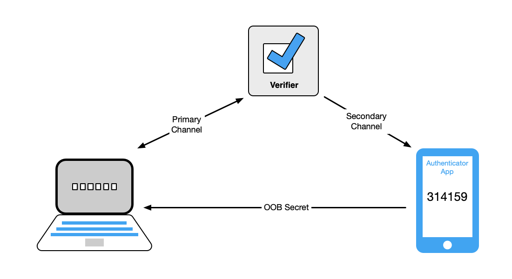
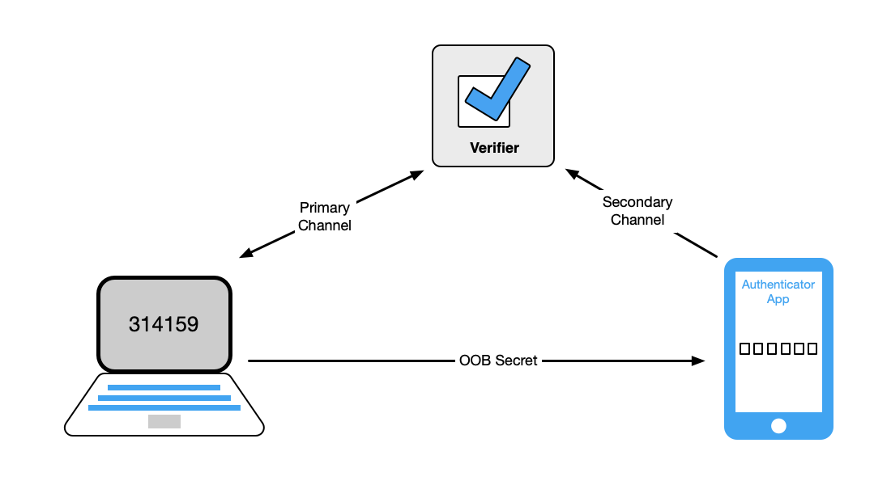
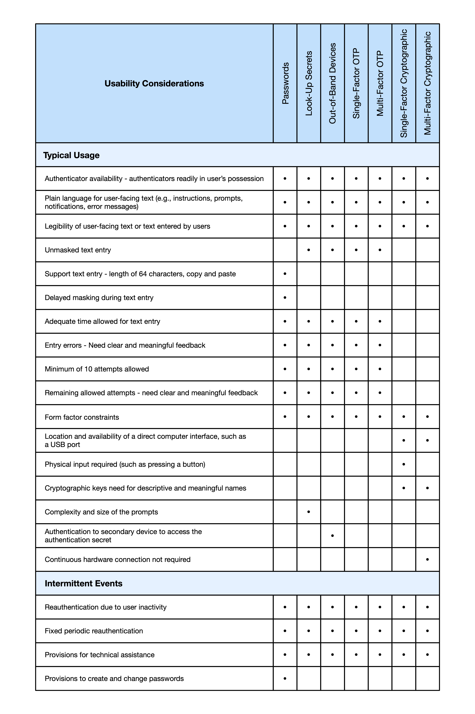

Tue, 26 Aug 2025 08:51:12 -0500
このガイドラインは、ネットワークを介して政府情報システムとやり取りする主体の認証に焦点を当て、特定の請求者が以前に認証された加入者であることを確立します。認証プロセスの結果は、認証を実行するシステムによってローカルで使用されるか、フェデレーテッド ID システムの他の場所でアサートされる場合があります。このドキュメントでは、3 つの認証保証レベルのそれぞれの技術要件を定義します。このガイドラインは、この目的外の標準の開発または使用を制限することを意図したものではありません。この出版物は、NIST Special Publication (SP) 800-63B に取って代わります。
認証;認証保証。クレデンシャルサービスプロバイダー。デジタル認証;パスワード。
この資料とその付属巻 [SP800-63]、[SP800-63A]、および [SP800-63C] は、組織がデジタル ID サービスを実装するための技術ガイドラインを提供します。
このドキュメント SP 800-63B は、3 つの認証保証レベル(AAL)のそれぞれでリモート ユーザ認証を行うためのクレデンシャル サービス プロバイダー(CSP)の要件を提供します。
このセクションは有益です。
認証は、デジタル サービスにアクセスしようとするサブジェクトが認証に使用されるシークレットを制御していることを確立することにより、デジタル ID を要求するために使用される 1 つ以上のオーセンティケーターの有効性を判別するプロセスです。再訪問がサービスに適用できる場合、認証が成功すると、現在サービスにアクセスしている被験者が以前にサービスにアクセスした被験者と同じであるという合理的なリスクベースの保証が提供されます。ワンタイムサービス(つまり、加入者がサービスに一度しかアクセスしない)は、必ずしも永続的なデジタル認証や認証者の発行を必要としません。
クレームの認証は、クレデンシャルサービスプロバイダー(CSP)によって管理されているサブスクライバーアカウントに記録されたオンラインアクティビティにサブスクライバーを関連付けるプロセスの中心です。認証は、要求者が特定のサブスクライバ・アカウントに関連付けられた 1 つ以上のオーセンティケータ (SP 800-63 の一部の以前のエディションではトークンと呼ばれます) を制御していることを確認することによって実行されます。認証プロセスは、CSP の役割である検証者、またはフェデレーション認証では ID プロバイダー (IdP) の役割によって実行されます。認証が成功すると、検証者はサブスクライバの識別子を証明書利用者 (RP) にアサートします。オプションで、検証者はRPに追加の属性をアサートできます。
このガイドラインでは、さまざまな認証保証レベル (AAL) で使用できる認証プロセスの種類 (オーセンティケーターの選択など) に関する推奨事項を提供します。また、オーセンティケーターの初期発行、保守、オーセンティケーターの紛失または盗難の場合の無効化など、オーセンティケーターの存続期間中に発生する可能性のあるイベントに関する推奨事項も提供します。
このガイドラインは、ネットワーク上のシステムに対するサブジェクトのデジタル認証に適用されます。また、認証プロトコルに参加している検証者と RP は、認証対象のサービスの ID を保証するために、要求者に対して認証されることも義務付けられています。物理的なアクセス(建物など)のための人の認証には対応していません。
このガイドラインは、加入者が自分の認証秘密を保護し、他の人に開示しない責任があることを認識しています (資格情報の共有など)。さまざまな AAL の保護は、資格情報の盗難から保護することを目的としており、サブスクライバーによる資格情報の秘密の意図的な開示から保護することを意図したものではありません。ほとんどの場合、そのような意図的な共謀や共有を検出して防止できる技術的制御はほとんどありません。
AAL は、認証トランザクションの強度を分類します。より強力な認証(つまり、より高いAAL)には、悪意のある攻撃者がより優れた機能を持ち、認証プロセスをうまく破壊するためにより多くのリソースを費やす必要があります。より高い AAL での認証により、攻撃のリスクを効果的に軽減できます。各 AAL の技術要件の概要を以下に示します。特定の規範的要件については、この文書のセクション 2 およびセクション 3 を参照してください。
認証保証レベル 1: AAL1 は、認証対象のサブスクライバ アカウントにバインドされた認証子をクレーマントが制御しているという基本的な信頼性を提供します。AAL1 では、利用可能な幅広い認証テクノロジーを使用した単一要素認証のみが必要です。ただし、AAL1 で評価されるアプリケーションでは、多要素認証オプションを提供することをお勧めします。認証を成功させるには、クレーセンティカントがオーセンティケーターの所有と制御を証明する必要があります。
認証保証レベル 2: AAL2 は、認証対象の加入者アカウントにバインドされた 1 つ以上の認証者が要求者を制御しているという高い信頼性を提供します。2つの異なる認証要素の所有と制御の証明が必要です。AAL2で評価されるアプリケーションは、フィッシング耐性認証(第3.2.5条を参照)オプションを提供する必要があります。
認証保証レベル 3: AAL3 は、認証対象の加入者アカウントにバインドされた 1 つ以上の認証者が要求者を制御しているという非常に高い信頼性を提供します。AAL3 での認証は、公開鍵暗号化プロトコルを使用した鍵の所有証明に基づいています。AAL3認証には、エクスポート不可能な認証キー(第3.2.13項を参照)を備えたフィッシング耐性認証器(第3.2.5項を参照)が必要です。AAL3で認証するには、請求者は2つの異なる認証要素の所有と管理を証明する必要があります。
セッションが特定の AAL で認証され、より高い AAL が必要な場合、認証プロセスでは、セッションの AAL を上げるためのステップアップ認証も提供される場合があります。
このガイドラインでは、テキストで次のタイポグラフィ規則を使用します。
このドキュメントは次のように構成されています。各セクションには、規範的 (つまり、コンプライアンスのために必須) または有益 (つまり、必須ではない) のいずれかとしてラベル付けされています。
このセクションは規範的です。
特定のAALの要件を満たし、加入者として認識されるために、請求者は、そのレベルの要件と同等以上の強度を持つプロセスを使用して、RP(または[SP800-63C]に記述されているIdP)に対して認証するものとします(SHOULD)。認証プロセスにより、加入者がその RP に対して認証するたびに一意に識別される識別子が生成されます。識別子は仮名であっても構いません(MAY)。サブスクライバーを一意のサブジェクトとして識別する他の属性も提供されてもよい(MAY)。各AALの認証者と検証者に関する詳細な規範的要件は、第3節に記載されています。最適なAALの選び方については、[SP800-63] Sec.3を参照してください。
本人確認中および本人確認後に収集された個人情報([SP800-63A]を参照)は、デジタルIDサービスによって、加入者アカウントを通じて加入者が利用できるようにしてもよい(MAY)。連邦政府機関による個人情報の公開またはオンライン利用には、[EO13681] に準拠した多要素認証が必要です。したがって、連邦政府機関は、個人情報がオンラインで利用可能になる場合、最低限のAAL2を選択するものとします(SHOULD)。
すべてのAALにおいて、第5.3条に記載されている該当する指標を含む、潜在的な不正行為の指標は、誤認証のリスクを下げるために使用してもよい(MAY)。たとえば、予期しない地理位置情報や IP アドレス ブロック (クラウド サービスなど) からの認証により、追加のリスクベースの制御の使用が求められる場合があります。CSPまたは検証者は、有効性について、潜在的な不正行為の指標の使用を評価し、ユーザー集団への潜在的な悪影響を特定して軽減するものとします(MUST)。CSP または検証者は、認証プライバシー リスク評価に不正指標を含めるものとします (SHOULD)。認証プロセスの前または最中に潜在的な不正指標を使用しても、トランザクションの AAL に影響を与えたり変更したり、認証要素に代わるものになったりすることはありません。
このドキュメント全体を通して、[FIPS140] 要件は、Cryptography Module Validation Program [CMVP] によって検証された暗号化の実装を利用するセキュリティ テクノロジー、製品、およびサービスによって満たされています。特定の AAL での FIPS 140 要件は、多くの場合、認証者と検証者で異なり、通常、より厳しい要件が検証者に適用されます。これは、認証者の認証に対する実際的な制限と、検証者でのセキュリティ侵害に関連することが多いより広い範囲を認識したものです。
AAL1 は、要求者が加入者アカウントにバインドされたオーセンティケーターを制御しているという基本的な信頼性を提供します。AAL1 では、利用可能な幅広い認証テクノロジーを使用した単要素認証または多要素認証が必要です。検証者は、AAL1 で多要素認証オプションを利用できるようにし、その使用を奨励すべきです (SHOULD)。認証を成功させるには、要求者が安全な認証プロトコルを通じてオーセンティケーターの所有と制御を証明する必要があります。
AAL1認証は、第3項でさらに定義されている以下の認証タイプのいずれかを使用するものとします(SHALL shall shall the following authentication type that more defin's Section 3).
AAL1で使用される認証システムは、承認された暗号化を使用するものとします(SHALL SHOULD)。つまり、承認されたアルゴリズムを使用する必要がありますが、実装は [FIPS140] で検証する必要はありません。
請求者と検証者の間の通信は、1つまたは複数の認証された保護されたチャネルを介して行われるものとします(SHALL shall that through authenticated protected channels)。
AAL1 で連邦機関によって、または連邦機関に代わって運営される検証者が使用する暗号化は、[FIPS140] レベル 1 の要件を満たすように検証されるものとします。
これらのガイドラインは、セクション 5.2 で詳しく説明されている 2 種類のタイムアウトを規定しています。
加入者セッションの定期的な再認証は、第5.2条に記載されているように実行されるものとする(MUST)。明確な再認証の全体的なタイムアウトが確立されるものとし、AAL1 で 30 日以内であるべきです (SHOULD)。非アクティブ タイムアウトは適用できますが、AAL1 では必須ではありません。
AAL2 は、クレーマントがサブスクライバ アカウントにバインドされている 1 つ以上のオーセンティケーターを制御しているという高い信頼性を提供します。安全な認証プロトコルを使用した 2 つの異なる認証要素の所有と制御の証明が必要です。承認された暗号化技術が必要です。
AAL2 では、認証は、多要素認証システム、または 2 つの個別の認証要素の組み合わせのいずれかを使用するものとします (SHALL )。多要素認証システムでは、デバイスのアクティブ化に必要な生体認証センサーが統合された暗号的に安全なデバイスなど、1 つの認証イベントを実行するために 2 つの要素が必要です。認証者の要件は、セクション 3 で指定されています。
多要素認証システムを使用する場合、次のいずれかを使用できます。
2つの単一要素認証器の組み合わせが使用される場合、その組み合わせには、パスワード(第3.1.1条)または生体認証比較のいずれかと併せて、以下のリストから1つの物理認証者(すなわち「あなたが持っているもの」)が含まれるものとする(MUST)。
生体認証特性は、それ自体では認証者として認識されません。セクション3.2.3では、生体認証比較とともに物理認証システムを認証する必要があります。物理認証システムは「あなたが持っているもの」として機能し、生体認証マッチングは「あなたがいるもの」として機能します。生体認証比較が多要素認証システムのアクティベーション要素として使用される場合、認証自体が物理認証システムとして機能します。そのセクションで述べたように、生体認証因子のローカル検証(つまり、活性化因子として生体認証比較を備えた多要素認証システムの使用)は、中央の生体認証因子比較よりも優先されます。
AAL2で使用される認証システムは、承認された暗号化を使用するものとします(SHALL SHOULD)。連邦政府機関によって調達された暗号化認証器は、[FIPS140] レベル 1 の要件を満たすように検証されるものとします (MUST)。AAL2で使用される少なくとも1つの認証システムは、第3.2.7条に記載されているように、リプレイ耐性を有するものとする(MUST)。AAL2 での認証は、第 3.2.8 節で説明されているように、少なくとも 1 つのオーセンティケーターからの認証意図を実証すべきです (SHOULD)。
請求者と検証者の間の通信は、1つまたは複数の認証された保護されたチャネルを介して行われるものとします(SHALL shall that through authenticated protected channels)。
AAL2 の連邦機関によって、または連邦機関に代わって運営される検証者が使用する暗号化は、特に指定がない限り、[FIPS140] レベル 1 の要件を満たすように検証されるものとします。
検証者は、第 3.2.5 条に記載されているように、AAL2 で少なくとも 1 つのフィッシング耐性認証オプションを提供するものとします (MUST)。連邦政府機関は、スタッフ、請負業者、およびパートナーに対し、連邦情報システムにアクセスするためにフィッシング耐性認証を使用することを要求するものとします。いずれの場合も、フィッシングは重大な脅威ベクトルであるため、検証者は可能な限りAAL2でフィッシング耐性認証の使用を奨励すべきである(SHOULD)。
加入者セッションの定期的な再認証は、第5.2条に記載されているように実行されるものとする(MUST)。明確な再認証の全体的なタイムアウトが確立されるものとし、AAL2 で 24 時間以内にする必要があります。非アクティブ タイムアウトは 1 時間以内にする必要があります。非アクティブタイムアウトが発生しているが、全体的なタイムアウトがまだ発生していない場合、検証者は、第5.1節で説明されているように、セッションシークレットと組み合わせて、成功したパスワードまたは生体認証の比較のみを使用して、加入者が再認証することを許可してもよい(MAY)。
AAL3 は、クレーマンがサブスクライバー アカウントにバインドされているオーセンティケーターを制御しているという非常に高い信頼性を提供します。AAL3 での認証は、アクティベーション ファクターまたはパスワードとともに暗号化プロトコルを使用したキーの所有の証明に基づいています。AAL3 認証では、フィッシング耐性を提供するエクスポート不可能な秘密鍵を持つ暗号化認証器を使用する必要があります。承認された暗号化技術が必要です。
AAL3 認証には、次のいずれかの認証子の組み合わせが必要とする (SHALL )。
生体認証特性は、それ自体では認証者として認識されません。セクション3.2.3では、生体認証比較とともに物理認証者を認証する必要があります。物理認証システムは「あなたが持っているもの」として機能し、生体認証マッチングは「あなたがいるもの」として機能します。生体認証比較が多要素認証システムのアクティベーション要素として使用される場合、認証自体が物理認証システムとして機能します。そのセクションで述べたように、生体認証因子のローカル検証(つまり、活性化因子として生体認証比較を備えた多要素認証システムの使用)は、中央の生体認証因子比較よりも優先されます。
AAL3で使用される認証者は、承認された暗号化を使用するものとします(SHALL SHOULD)。請求者と検証者の間の通信は、1つまたは複数の認証された保護されたチャネルを介して行われるものとします(SHALL shall that through authenticated protected channels)。AAL3で使用される暗号化認証器は、エクスポート不可能な秘密鍵を有するものとし、第3.2.5条に記載されているように、フィッシング耐性を提供するものとする(SHALL SHOULD)。暗号化認証プロトコルは、セクション 3.2.7 に記載されているように、リプレイ耐性を有するものとします (MUST)。AAL3におけるすべての認証および再認証プロセスは、第3.2.8条に記載されているように、少なくとも1つの認証者からの認証意図を実証するものとする(SHOULD)。AAL3で使用される暗号化認証者は、認証シークレットを検証者の侵害から保護するために公開鍵暗号化を使用するものとします(SHALL SHOULD)。
AAL3で使用される単一要素および多要素認証システムは、全体として[FIPS140]レベル1以上の要件を満たすことが検証されるものとします。セクション3.2.12で説明されているように、AAL3で使用される暗号化認証器は、認証キーの漏洩や抽出を防ぐために、ハードウェアで保護された分離された環境を提供する必要があります。同期可能なオーセンティケーター(付録Bで説明)は秘密鍵をエクスポート可能にする必要があるため、同期可能なオーセンティケーターはAAL3で使用されないものとします。
AAL3 の検証者が使用する暗号化は、[FIPS140] レベル 1 以上で検証されるものとします。
AAL3 のハードウェアベースの認証者と検証者は、関連するサイドチャネル (タイミングや消費電力分析など) 攻撃に抵抗すべきです (SHOULD)。
加入者セッションの定期的な再認証は、第5.2条に記載されているように実行されるものとする(MUST)。AAL3 では、再認証の全体的なタイムアウトは 12 時間以内とする (SHALL )。非アクティブ タイムアウトは 15 分以内にする必要があります。AAL2 とは異なり、AAL3 の再認証要件は、AAL3 での初期認証と同じです。
すべての AAL での認証には、次の要件が適用されます。
検証者は、[SP800-53]、または同等の連邦(例:[FEDRAMP])または業界標準で定義されている中程度のベースラインセキュリティコントロールから、適切に調整されたセキュリティコントロールを採用するものとする(MUST)。
検証者は、適用される可能性のある国立公文書記録局 (NARA) の記録保持スケジュールを含む、適用される法律、規制、およびポリシーに従って、それぞれの記録保持ポリシーを遵守するものとします。検証者が必須要件がない状態で記録を保持することを選択した場合、検証者または検証者が参加するCSPまたはIdPは、プライバシーおよびセキュリティリスクの評価を含むリスク管理プロセス[NISTRMF]を実施して、記録を保持する期間を決定し、その保持ポリシーを加入者に通知するものとします。
検証者は、[SP800-53] または同等の業界標準で定義されている、適切に調整されたプライバシー制御を採用するものとします (SHOULD)。
CSPまたはIdPが、IDサービス(つまり、ID証明、認証、または属性のアサーション)、関連する不正行為の軽減、または法律または法的手続きの遵守以外の目的で属性を処理する場合、追加の処理から生じるプライバシーリスクに見合った予測可能性と管理可能性を維持するための措置を実施するものとします。このような措置の例としては、明確な通知の提供、加入者の同意の取得、属性の選択的な使用または開示の有効化などがあります。CSPまたはIdPが同意手段を使用する場合、追加処理に対する同意をIDサービスの条件としないものとします(SHOULD)。
CSP または IdP が政府機関または民間部門のプロバイダーであるかどうかに関係なく、認証サービスを提供または使用する連邦政府機関には、次の要件が適用されます。
検証者および関連するCSPまたはIdPは、[SP800-63]の第5.6項に記載されているように、加入者の苦情および加入者認証プロセスから生じる問題を是正するためのメカニズムを提供するものとします(SHOULD)。これらのメカニズムは、加入者が簡単に見つけて使用できるものでなければならない(SHOULD)。CSPまたはIdPは、苦情または問題の解決における有効性のメカニズムを評価するものとします(SHOULD)。
\clearpage
表 1 は、各 AAL の要件の非規範的な要約を示しています。
| 要件 | AAL1 | AAL2 | AAL3 |
|---|---|---|---|
| 許可される認証タイプ | * 任意のAAL2またはAAL3オーセンティケータータイプ * パスワード * ルックアップシークレット * アウトオブバンド * SF OTP * SF 暗号化 |
* MF暗号化 * MFアウトオブバンド * MF OTP * パスワードまたは生体認証の比較に加えて、 –SF暗号化 –ルックアップシークレット –アウトオブバンド– SF OTP |
* MF暗号化 * SF暗号化プラス: –パスワード –生体認証比較 |
| FIPS 140 検証 (政府検証者および認証者) |
検証者 – レベル 1 |
検証ツール – レベル 1 オーセンティケーター – レベル 1 全体 |
検証ツール – レベル 1 オーセンティケーター – レベル 1 全体 |
| 再認証 (推奨) |
全体で30日 | 全体で 24時間、1時間非アクティブ 、単一要素が必要 |
全体で 12時間、15分間の非アクティブ |
| フィッシング耐性 | 不要 | 推奨; 利用可能である必要があります |
必須 |
| リプレイ耐性 | 不要 | 必須 | 必須 |
| 認証インテント | 不要 | 推奨 | 必須 |
| キーのエクスポート可能性 | 許可 | 許可 | 禁じられた |
このセクションは規範的です。
このセクションでは、各タイプのオーセンティケーターに固有の詳細な要件について説明します。第2項で規定されている再認証要件と、第3.2.5項で説明されているAAL3でのフィッシング耐性の要件を除き、各認証システムの技術要件は、認証システムが使用されるAALに関係なく、同じです。
[SP800-63C]で説明したフェデレーテッドアプリケーションでは、IdPの認証機能はCSPやベリファイアの認証機能と密接に対応しています。以下の説明では、CSP に関連する要件が IdP にも適用されます。
多くの場合、加入者は、OTP を受信するファミリー電話など、認証プロセスで使用されるデバイスを共有する必要があります。一般向けアプリケーションでは、CSP は、デバイスが複数の加入者によって認証子として登録されるのを阻止すべきではありません (SHOULD NOT)。ただし、大規模な詐欺や悪用を防止するための制限を設けることができます(たとえば、1つのデバイスが登録できる加入者アカウントの総数を制限する)。
認証、オーセンティケーターバインディング(セクション4.1で説明)、およびセッション管理(セクション5で説明)は、表2に示すように、1つ以上のタイプのシークレットの所有の証明に基づいています。
| シークレットの種類 | 目的 | 参照セクション |
|---|---|---|
| パスワード | 認証要素として使用されるサブスクライバが選択したシークレット | 3.1.1 |
| ルックアップシークレット | 検証者によって発行され、秘密の所有を証明するために一度だけ使用される秘密 | 3.1.2 |
| 帯域外シークレット | 検証者によって生成され、加入者のデバイスに個別に送信されて所有を検証する短命の秘密 | 3.1.3 |
| ワンタイムパスコード(OTP) | オーセンティケーターによって生成され、オーセンティケーターの所有を証明するために一度だけ使用されるシークレット | 3.1.4、3.1.5 |
| アクティベーションシークレット | 多要素認証システムのアクティベーション要素としてローカルで使用されるパスワード | 3.2.10 |
| 長期認証シークレット | 物理オーセンティケーターに埋め込まれたシークレットで、認証のために機能できるようにする | 4.1 |
| リカバリ コード | 認証できなくなったアカウントを回復できるようにするためにサブスクライバーに発行されるシークレット | 4.2 |
| セッションシークレット | 認証時に検証者によって発行され、認証されたセッションの継続性を確立するために使用されるシークレット | 5.1 |
次の要件は、特定の認証タイプに適用されます。
パスワード (パスフレーズ、または数字の場合は個人識別番号 (PIN) と呼ばれることもあります) は、加入者が選択し、記憶または記録することを目的とした秘密の値です。パスワードは、攻撃者が正しいシークレット値を推測したり、発見したりすることが現実的でないほど、十分な有効強度と秘密性を備えている必要があります。パスワードとは「あなたが知っているもの」です。
このセクションの要件は、独立した認証要素として使用され、認証された保護チャネルを介して検証ツールに送信される、一元的に検証されたパスワードに適用されます。多要素認証システムのアクティベーション要素としてローカルで使用されるパスワード(ロック解除PINなど)は、アクティベーションシークレットと呼ばれ、セクション3.2.10で説明します。一元的に検証されたパスワードとは対照的に、アクティベーション シークレット (多くのデバイスのロック解除パスワードや PIN に類似) は検証ツールに送信されず、代わりに認証シークレットにアクセスするためにローカルで使用されます。
パスワードはフィッシングに耐性がありません。
パスワードは、サブスクライバーによって選択されるか、CSP によってランダムに割り当てられるものとします (SHOULD)。
選択したパスワードが一般的に使用される値、予想される値、または侵害された値のブロックリストにあるために CSP が許可しない場合 (セクション 3.1.1.2 を参照)、加入者は別のパスワードを選択する必要があります (SHOULD)。パスワードのその他の構成要件は課されないものとします。この理論的根拠は、付録 A「パスワードの強度」に記載されています。
パスワードには、次の要件が適用されます。
パスワードで Unicode 文字が受け入れられる場合、検証者は、Unicode 正規化フォーム [UAX15] のセクション 12.1 で定義されている正規化フォーム正規構成 (NFC) 正規化を使用して、安定化された文字列の正規化プロセスを適用すべきです (SHOULD)。このプロセスは、パスワードを表すバイト文字列をハッシュする前に適用されます。Unicode 文字を含むパスワードを選択する加入者には、一部のエンドポイントが一部の文字を異なる方法で表現する可能性があり、それが正常に認証する能力に影響を与える可能性があることを通知されるべきです (SHOULD)。
パスワードの設定または変更の要求を処理する場合、検証者は、見込みのシークレットを、既知の一般的に使用されるパスワード、予想されるパスワード、または侵害されたパスワードを含むブロックリストと比較するものとします(SHOULD)。パスワード全体は、そこに含まれる可能性のある部分文字列や単語ではなく、比較の対象となるものとします(SHOULD)。たとえば、リストには次のものが含まれます。
選択したパスワードがブロックリストで見つかった場合、CSP はサブスクライバーに別のシークレットを選択するよう要求し、拒否の理由を提供するものとします (SHALL )。ブロックリストはブルートフォース攻撃に対する防御に使用され、失敗した試行にはレート制限があるため、ブロックリストは、試行制限に達する前に攻撃者が推測する可能性のあるパスワードをサブスクライバーが選択できないようにするのに十分なサイズであるべきです (SHOULD)。
ブロックリストがオンライン攻撃を防御するために使用されるため、ブロックリストが大きすぎると、セキュリティ上の利点はほとんどありませんが、オンライン攻撃は、セクション 3.2.2 で説明されているスロットリング要件によってすでに制限されています。
検証者は、サブスクライバーが強力なパスワードを選択できるようにガイダンスをサブスクライバーに提供するものとします(SHOULD)。これは、リストされた脆弱なパスワード [ブロックリスト] の些細な変更を阻止するため、ブロックリスト上のパスワードが拒否された後に特に重要です。
検証者は、第3.2.2節に記載されているように、加入者アカウントで行うことができる認証試行の失敗回数を効果的に制限するレート制限メカニズムを実装するものとする(SHOULD)。
検証者は、パスワード マネージャーと自動入力機能の使用を許可するものとします(SHOULD)。検証者は、パスワードの自動入力 API が利用できない場合にパスワード マネージャーの使用を容易にするために、パスワードを入力するときに請求者が「貼り付け」機能を使用することを許可すべきです(SHOULD)。パスワード マネージャーは、特にパスワード マネージャーにパスワード ジェネレーター [Managers] が含まれている場合、加入者がより強力なパスワードを選択する可能性を高めることが示されています。
請求者がパスワードを正常に入力できるように、検証者は、パスワードが入力されている間、および検証者に送信されるまで、一連のドットやアスタリスクではなく、パスワードを表示するオプションを提供するべきです(SHOULD)。これにより、請求者は、画面が観察される可能性が低い場所にいる場合に、自分の入力を確認できます。検証者は、正しい入力を確認するために、各文字が入力された後、入力された個々の文字を請求者のデバイスに短時間表示することを許可しても構いません。これは、モバイルデバイスでは一般的です。
検証者は、パスワードがそのような処理後も少なくとも必要な最小長にとどまり、結果のパスワードの複雑さが大幅に減少しない場合、入力ミスを限定的に許容しても構いません(例えば、検証前に先頭と末尾の空白文字を削除する、先頭文字の大文字と小文字が異なるパスワードの検証を許可する)。
検証者と CSP は、パスワードを要求する際に、承認された暗号化と認証された保護チャネルを使用するものとします (SHOULD)。
検証者は、オフライン攻撃に耐性のある形式でパスワードを格納するものとします (SHALL )。パスワードは、適切なパスワードハッシュスキームを使用してソルト化およびハッシュ化されるものとします(SHOULD)。パスワードハッシュスキームは、パスワード、ソルト、およびコスト係数を入力として受け取り、パスワードハッシュを生成します。その目的は、ハッシュ化されたパスワード ファイルを取得した攻撃者にとって、各パスワードの推測をより高価にし、それによって推測攻撃のコストを高くしたり、法外なものにしたりすることです。選択されたコスト係数は、検証者のパフォーマンスに悪影響を与えることなく、実用的な範囲で高くすべきであるべきです(SHOULD)。コンピューティングパフォーマンスの向上を考慮して、時間の経過とともに増やすべきです。[SP800-132] の最新版で公開されている承認済みのパスワードハッシュスキーム、またはパスワードハッシュスキームに関する更新されたNISTガイドラインを使用するべきです(SHOULD)。パスワード検証ツールの選択された出力長は、ソルト情報とバージョン管理情報を除き、基礎となるパスワードハッシュスキーム出力の長さと同じであるべきです(SHOULD)。
ソルトは、少なくとも32ビットの長さであり、保存されたハッシュ間のソルト値の衝突を最小限に抑えるために選択されるものとする(つまり、複数のサブスクライバーアカウントが同じハッシュ化されたパスワードを持つのを防ぐため)。ソルト値と結果のハッシュの両方が、パスワードごとに保存されるものとします(SHALL SHOULD)。コストファクターを含む、使用されるパスワードハッシュスキームへの参照は、新しいアルゴリズムと作業ファクターへの移行を可能にするために、パスワードごとに保存されるべきです(SHOULD)。
さらに、検証者は、検証者のみが知っている秘密鍵を使用して、鍵付きハッシュまたは暗号化操作の追加反復を実行するべきです(SHOULD)。使用する場合、このキー値は、セクション 3.2.12 で説明されているように、承認されたランダム ビット ジェネレーターによって生成されるものとします (SHALL )。秘密鍵の値は、ハッシュ化されたパスワードとは別に保管されるものとします(SHALL SHOULD)。ハードウェア セキュリティ モジュールなどのハードウェアで保護された領域や、トラステッド プラットフォーム モジュール(TPM)などのトラステッド実行環境(TEE)内で保存して使用する必要があります。この追加の反復では、秘密鍵の値が秘密のままである限り、ハッシュ化されたパスワードに対するブルートフォース攻撃は実用的ではありません。
ルックアップ シークレット オーセンティケーターは、要求者と CSP の間で共有される一連のシークレットを格納する物理的または電子的な記録です。クレームは、オーセンティケーターを使用して、検証者からのプロンプトに応答するために必要な適切なシークレットを検索します。たとえば、検証者は、カードに印刷された数値または文字列の特定のサブセットを表形式で提供するように要求者に依頼できます。ルックアップシークレットの典型的な用途は、別のオーセンティケータが紛失または誤動作した場合に使用するために加入者が保存する1回限りの保存されたリカバリコード(セクション4.2.1.1を参照)です。検索の秘密とは「あなたが持っているもの」です。
検索シークレットはフィッシング耐性がありません。
ルックアップ・シークレット・オーセンティケーターを作成するCSPは、第3.2.12条に記載されているように、承認されたランダム・ビット・ジェネレーターを使用してシークレットのリストを生成し、オーセンティケーター・リストを加入者に安全に配信するものとする(例えば、対面セッション、オンライン・セッション、連絡先アドレスへの郵便など)。オンラインセッションを介して配信される場合、セッションはAAL2以上の加入者によって認証され、認証された保護されたチャネルを介して、第4.1.2条の登録後の拘束要件に従ってシークレットを配信するものとする(SHOULD)。 ルックアップシークレットの長さは、少なくとも小数点以下6桁(または同等の数字)でなければならない(MUST)。セクション3.1.2.2に記載されている追加の要件も、その長さに応じて適用される場合があります。
ルックアップシークレットの検証者は、クレーンにオーセンティケーターからのシークレットの入力を求めるものとする(SHOULD)。ルックアップ シークレット オーセンティケーターからのシークレットは、一度だけ正常に使用されるものとします (SHOULD)。ルックアップ シークレットがグリッド カードから派生する場合、各グリッド セルは 1 回だけ使用すべきであり、これにより、ルックアップ シークレットを使用して実行できる認証の数が制限されます。シークレットの非常に長いリストが必要になる可能性があります。
検証者は、オフライン攻撃に耐性のある形式でルックアップシークレットを格納するものとします(SHALL SHOULD)。すべてのルックアップシークレットは、承認されたハッシュ関数を使用してハッシュ化された形式で保存されるものとします(SHOULD)。
ルックアップシークレットは、第3.1.2.1条に規定されているように、少なくとも10進数6桁(または同等の数字)の長さでなければならない(MUST)。指定された長さよりも短いルックアップシークレットには、次のような追加の検証要件があります。
[SP800-131A]の最新版で規定されている最小セキュリティ強度(すなわち、この公開日時点で112ビット)よりも短いルックアップシークレットは、第3.1.1.2節に記載されているように、適切なパスワードハッシュスキームを使用してソルト化およびハッシュ化された形式で保存されるものとする(MUST)。ソルト値は、少なくとも32ビットの長さであり、格納されたハッシュ間のソルト値の衝突を最小限に抑えるために任意に選択されるものとする(MUST)。ソルト値と結果のハッシュの両方が、ルックアップシークレットごとに保存されるものとします(SHALL SHOULD)。
検証者は、第3.2.2節に記載されているように、加入者アカウントで行うことができる認証試行の失敗回数を効果的に制限するレート制限メカニズムを実装するものとする(SHOULD)。
検証者は、ルックアップシークレットを要求する際に、承認された暗号化と認証された保護されたチャネルを使用するものとします(SHALL SHOULD)。
帯域外認証器は、一意にアドレス指定可能であり、セカンダリ チャネルと呼ばれる独立した通信チャネルを介して検証者と安全に通信できる物理デバイスです。デバイスは、クレームによって所有および制御され、認証用のプライマリチャネルとは別のこの別のセカンダリチャネルを介したプライベート通信をサポートします。帯域外認証器は「あなたが持っているもの」です。帯域外デバイスの例としては、検証者が加入者と独立して通信できるアプリケーションを搭載したスマートフォンや、テキストメッセージングや音声通話を使用して加入者と通信することなどがあります。
帯域外認証では、検証者によって生成された短期シークレットが使用されます。シークレットは、プライマリ チャネルとセカンダリ チャネルの認証操作を安全にバインドし、要求者による帯域外デバイスの制御を確立します。
帯域外認証はフィッシング耐性がありません。
アウトオブバンドオーセンティケーターは、次のいずれかの方法で動作できます。


手記：帯域外認証の 3 番目の方法は、プライマリ チャネルとセカンダリ チャネルから受信したシークレットを比較し、セカンダリ チャネルで承認を要求します。この方法は、サブスクライバーが必要に応じてシークレットを実際に比較せずに認証要求を承認する可能性を高めるため、受け入れられるとは見なされなくなりました。これは、攻撃者が加入者に対して多数の帯域外認証要求を生成し、加入者が煩わしさを排除するために承認する可能性がある「認証疲労」攻撃で観察されています。このため、これらのガイドラインでは、サブジェクトが検証者とのセッションに積極的に参加しているという保証を高めるために、帯域外デバイスとプライマリチャネルの間でシークレットを転送する必要があります。提示できるリストのサイズが限られているため、請求者は秘密を合理的に推測する可能性があるため、比較する秘密のリストを請求者に提示するだけでは、この要件を満たすには十分ではありません。
アウトオブバンドオーセンティケーターは、アウトオブバンドシークレットまたは認証要求を取得するために、検証者と別のチャネルを確立するものとします(SHALL SHOULD)。このチャネルは、請求者の参加なしにデバイスが一方のチャネルから他方のチャネルに情報を漏らさない限り、プライマリ通信チャネルに関して帯域外であると見なされます(同じデバイスで終端する場合でも)。
帯域外デバイスは、検証ツールによって一意にアドレス指定可能であるべきです。セカンダリ チャネルを介した通信は、公衆交換電話網 (PSTN) 経由で送信されない限り、承認された暗号化を使用するものとします (SHALL )。帯域外認証に PSTN を使用することに固有のその他の認証要件については、セクション 3.1.3.3 を参照してください。
電子メールは、以下に対して脆弱である可能性があるため、帯域外認証には使用されないものとします(SHALL NOT)。
電子メールアドレスを検証するために送信される確認コード、またはリカバリコードとして発行される確認コード(第4.2.1.2条を参照)は、認証プロセスではなく、上記の禁止の影響を受けません。
帯域外オーセンティケーターは、検証者と通信するときに、次のいずれかの方法で一意に認証するものとします。
承認された暗号化を使用して、検証者と相互に認証された保護チャネル (クライアント認証トランスポート層セキュリティ (TLS) [RFC8446] など) を確立します。帯域外認証者と検証者の間の通信は、それぞれが認証する信頼できる仲介サービスを使用してもよい(MAY)。チャネルの確立に使用される鍵は、Sec. 4.1 で説明されているように、オーセンティケーターのバインディング中に相互に認証されたセッションでプロビジョニングされるものとします (SHALL SHALL SHOULD)。
加入者を一意に識別する SIM カードまたは同等のシークレットを使用して、公衆携帯電話ネットワークに対して認証します。この方法は、PSTN (つまり、SMS または音声) または暗号化されたインスタント メッセージング サービスを介して検証ツールから帯域外デバイスにシークレットが送信される場合にのみ使用されるものとします (SHALL )。
検証ツールが呼び出して帯域外シークレットを指示できる PSTN への有線接続を使用します。この定義の目的上、「有線接続」には、他の有線メディアを介して PSTN サービスを提供するケーブル プロバイダーや、アナログ電話アダプターを介してファイバーを提供するケーブル プロバイダーなどのサービスが含まれます。
単一要素の帯域外認証システムの場合、検証ツールから帯域外デバイスにシークレットが送信された場合、所有者によってロックされている間、デバイスは認証シークレットを表示すべきではありません(SHOULD NOT)。むしろ、デバイスは、シークレットを表示するために、PIN、パスコード、または生体認証特性の提示と検証を要求すべきです(SHOULD)。ただし、オーセンティケーターは、ロックされたデバイスで認証シークレットの受信を示すべきです(SHOULD)。
アウトオブバンド認証者が、クレームがプライマリ通信チャネルに転送するシークレットを提示するのではなく、セカンダリ通信チャネルを介して承認を要求する場合、プライマリチャネルからのシークレットの転送を受け入れ、セカンダリチャネルを介して検証者に送信して、承認を認証トランザクションに関連付けるものとします(SHALL SHOULD)。請求者は、手動で、またはバーコードやクイックレスポンス(QR)コードなどの表現の支援を受けて、転送を実行しても構いません。
検証者は、認証された保護されたチャネルが帯域外認証者で確立されるのを待ち、その識別キーを検証します。検証者は、識別キー自体を保存しないものとするが、検証方法(例えば、承認されたハッシュ関数または識別キーの所有の証明)を使用して、認証者を一意に識別するものとする(SHALL SHOULD)。認証されると、検証者は認証シークレットを認証者に送信する。帯域外認証者との接続は、手動で開始されるか、プッシュ通知などのメカニズムによってプロンプトされてもよい(MAY)。
帯域外認証器の種類に応じて、次のいずれかが行われます。
セカンダリチャネルからプライマリチャネルへのシークレットの転送。図1に示すように、検証者は、加入者のオーセンティケーターを含むデバイスに、認証の準備ができていることを示すように信号を送っても構いません(MAY)。次に、ランダムなシークレットを帯域外オーセンティケーターに送信し、シークレットがプライマリ通信チャネルを介して返されるのを待つものとします(SHOULD)。
プライマリチャネルからセカンダリチャネルへのシークレットの転送。図2に示すように、検証者は、プライマリチャネルを介して請求者にランダムな認証シークレットを送信するものとします(SHALL )。その後、シークレットがクレームの帯域外認証器からセカンダリチャネルを介して返されるのを待つものとします(SHOULD)。検証者は、請求者が検証者への応答に対処する際に使用するアドレス(電話番号やVoIPアドレスなど)を追加で表示しても構いません。
いずれの場合も、認証は 10 分以内に完了しない限り無効とみなされるものとします (SHALL NOT)。検証者は、第 3.2.7 節に記載されているように、リプレイ耐性を提供するために、有効期間中に 1 回だけ有効なものとして特定の認証シークレットを受け入れるものとします (SHOULD)。
検証者は、第3.2.12節に記載されているように、承認されたランダムビットジェネレータを使用して、少なくとも10進数6桁(または同等の長さ)のランダム認証シークレットを生成するものとします(SHOULD)。認証シークレットの長さが64ビット未満の場合、検証者は、第3.2.2節に記載されているように、加入者アカウントで行うことができる連続した失敗した認証試行の総数を効果的に制限するレート制限メカニズムを実装するものとします(SHOULD)。新しい認証シークレットの生成は、失敗した認証カウントをリセットしないものとします (SHALL NOT)。
加入者デバイスにプッシュ通知を送信する帯域外検証者は、前回の認証の成功以降に送信されるプッシュ通知のレートまたは総数に妥当な制限を実装すべきです(SHOULD)。
PSTN に固有の追加の検証要件については、「セクション 3.1.3.3」を参照してください。
帯域外検証のための PSTN の使用は、本セクションに記載されているように制限され、第 3.2.9 条の要件を満たすものとします。事前登録された電話番号の設定または変更は、新しい認証者のバインドと見なされ、セクション 4.1.2 に記載されているとおりにのみ行われるものとします。
一部の加入者は、電話の通信範囲が制限されている地域、特に携帯電話サービスのない地域で、PSTN を使用して帯域外認証シークレットを配信できない場合があります。したがって、検証者は、代替のオーセンティケーターの種類がすべての加入者が利用できるようにし、加入者が制御する 1 つ以上のデバイスをバインドする前に、PSTN 帯域外認証システムのこの制限を加入者に思い出させるべきです。
検証者は、PSTN を使用して帯域外認証シークレットを配信する前に、リスク指標 (デバイス スワップ、SIM の変更、番号の移植、その他の異常な動作など) を考慮する必要があります (SHOULD)。
第3.2.9条の制限付きオーセンティケーターの議論と一致して、NISTは、脅威の状況の進化とPSTNの技術的運用に基づいて、PSTNを使用した帯域外認証の制限ステータスを調整する場合があります。
多要素帯域外認証システムは、単一要素帯域外認証器と同様に動作します(セクション3.1.3.1を参照)。ただし、クレームが認証トランザクションを完了できるようにする前に(つまり、使用されている認証フローに応じて認証シークレットにアクセスまたは入力する前に)、アクティベーション要素(つまり、パスワードまたは生体認証特性)の提示と検証が必要です。オーセンティケーターを使用するたびに、アクティベーション係数の提示が必要とする(SHALL )。
認証者のアクティベーションシークレットは、第3.2.10条の要件を満たすものとする(SHOULD)。生体認証アクティベーションファクターは、連続した認証失敗回数の制限を含む、第3.2.3条の要件を満たすものとする(MUST)。アクティベーションに使用されたパスワードまたは生体認証サンプル、および生体認証サンプルから派生した生体認証データ(例えば、指紋画像および指紋特徴抽出器によって生成された特徴位置)は、認証操作の直後に消去されるものとします(MUST)。
単一要素 OTP は、ワンタイム パスワード (OTP) を生成します。このカテゴリには、携帯電話などのデバイスにインストールされているハードウェア デバイスとソフトウェア ベースの OTP ジェネレーターが含まれます。これらのオーセンティケーターには、OTP を生成するためのシードとして使用されるシークレットが埋め込まれており、2 番目の要素によるアクティブ化は必要ありません。OTPは認証器に表示され、検証者に送信するために手動で入力され、認証者の所有と制御を証明します。単一要素OTP認証器は「あなたが持っているもの」です。
単一要素OTPは、シークレットがオーセンティケーターと検証者によって暗号的かつ独立して生成され、検証者によって比較される点を除いて、ルックアップシークレットオーセンティケーターに似ています。シークレットは、時間ベースのナンス、またはオーセンティケーターと検証ツールのカウンターに基づいて計算されます。
OTP 認証はフィッシング耐性がありません。[FIPS140] OTP オーセンティケーターと検証者の検証は必要ありません。
単一要素 OTP オーセンティケーターと検証ツールには、1) オーセンティケーターの存続期間中保持される対称キーと、2) オーセンティケーターが使用されるたびに変更されるか、リアルタイム クロックに基づくノンスという 2 つの永続値が含まれています。
秘密鍵とそのアルゴリズムは、少なくとも[SP800-131A]の最新版で規定されている最小セキュリティ強度(すなわち、本公開日時点で112ビット)を提供するものとする(MUST)。nonceは、その存続期間中のオーセンティケーターの各操作に対して一意であることを保証するのに十分な長さであるものとします(SHOULD)。加入者が、ソフトウェアベースのOTPオーセンティケータが存在するデバイスを変更する必要がある場合、第4.1.2項で説明されているように、新しいデバイス上のオーセンティケータアプリケーションを加入者アカウントにバインドし、使用されなくなるオーセンティケータアプリケーションを無効にすべきである(SHOULD)。あるいは、加入者は秘密鍵をエクスポートし、付録 B.2 の要件を満たす同期ファブリックに格納し、新しいデバイスで鍵を取得してもよい (MAY)。
オーセンティケーターの出力は、承認されたブロック暗号またはハッシュ関数を使用して取得され、キーとナンスを安全に結合します。検証者と連携して、オーセンティケーターは出力を小数点以下 6 桁 (または同等の表現) に切り捨てても構いません (MAY)。
オーセンティケーター出力の生成に使用されるナンスがリアルタイムクロックに基づいている場合、ナンスは少なくとも2分に1回変更されるものとします(SHALL )。
単一要素 OTP 検証者は、認証者が使用する OTP を生成するプロセスを効果的に複製します。そのため、オーセンティケーターが使用する対称鍵は、検証者にも存在し、鍵へのアクセスを、アクセスを必要とするソフトウェアコンポーネントのみに制限するアクセス制御によって、不正な開示から強力に保護されるものとします。
単一要素OTPオーセンティケーターを加入者アカウントにバインドする場合、検証者または関連するCSPは、キーを生成および交換するため、またはオーセンティケーター出力を複製するために必要なシークレットを取得するために、キー確立に承認された暗号化を使用するものとします(SHALL SHOULD)。
検証者は、OTP を収集する際に、承認された暗号化と認証された保護されたチャネルを使用するものとします (SHALL )。検証者は、第 3.2.7 条に記載されているように、リプレイ耐性を提供する有効な間、特定の OTP を一度だけ受け入れるものとします (MUST)。OTP の重複使用によりクレームの認証が拒否された場合、検証者は、攻撃者が事前に認証できた場合、クレーマンに警告しても構いません。検証者は、既存のセッションのサブスクライバーに、OTP の重複使用の試みについて警告することもできます (MAY)。
時間ベースの OTP [TOTP] は、その存続期間中のオーセンティケーターのいずれかの方向への予想されるクロック ドリフトに加えて、ネットワーク遅延と OTP の要求者入力の許容値によって決定される定義された存続期間を有するものとします (SHALL SHOULD)。
検証者は、第3.2.2節に記述されているように、オーセンティケーター出力の長さが64ビット未満である場合は、加入者アカウントで行うことができる認証試行の失敗回数を効果的に制限するレート制限メカニズムを実装すべきである(SHALL )。
多要素 OTP は、アクティベーション ファクターの入力に続いて、認証用のワンタイム パスワードを生成します。これには、携帯電話や同様のデバイスにインストールされているハードウェア デバイスやソフトウェア ベースの OTP ジェネレーターが含まれます。第2の認証要素は、一体型エントリーパッド、一体型生体認証(例えば、指紋)リーダ、または直接コンピュータインターフェース(例えば、ユニバーサルシリアルバス[USB]ポート)を介して提供され得る。OTPはオーセンティケーターに表示され、検証者に送信するために手動で入力されます。多要素OTP認証システムは、「あなたが知っているもの」または「あなたがいるもの」のいずれかによってアクティブ化された「あなたが持っているもの」です。
OTP 認証はフィッシング耐性がありません。[FIPS140] OTP オーセンティケーターと検証者の検証は必要ありません。
多要素OTPオーセンティケーターは、オーセンティケーターからOTPを取得するためにアクティベーションファクター(パスワードまたは生体認証特性)の提示と検証を必要とすることを除いて、単一要素OTPオーセンティケーター(セクション3.1.4.1を参照)と同様に動作します。オーセンティケーターを使用するたびに、アクティベーション係数の入力が必要とします(SHALL )。
アクティベーション情報に加えて、多要素 OTP オーセンティケーターと検証ツールには、1) オーセンティケーターの存続期間中保持される対称キーと、2) オーセンティケーターが使用されるたびに変更される、またはリアルタイム クロックに基づくナンスという 2 つの永続的な値が含まれています。
秘密鍵とそのアルゴリズムは、少なくとも[SP800-131A]の最新版で規定されている最小セキュリティ強度(すなわち、本公開日時点で112ビット)を提供するものとする(MUST)。nonceは、その存続期間中のオーセンティケーターの各操作に対して一意であることを保証するのに十分な長さであるものとします(SHOULD)。加入者が、ソフトウェアベースのOTPオーセンティケータが存在するデバイスを変更する必要がある場合、第4.1.2項で説明されているように、新しいデバイス上のオーセンティケータアプリケーションを加入者アカウントにバインドし、使用されなくなるオーセンティケータアプリケーションを無効にすべきである(SHOULD)。あるいは、加入者は秘密鍵をエクスポートし、付録 B.2 の要件を満たす同期ファブリックに格納し、新しいデバイスで鍵を取得してもよい (MAY)。
オーセンティケーターの出力は、承認された暗号化ブロック暗号またはハッシュ関数を使用して取得され、キーとナンスを安全に結合します。検証者と連携して、認証者は出力を 10 進数 6 桁以下または同等の数字に切り捨てても構いません (MAY)。
オーセンティケーター出力の生成に使用されるナンスがリアルタイムクロックに基づいている場合、ナンスは少なくとも2分に1回変更されるものとします(SHALL )。
認証者のアクティベーションシークレットは、第3.2.10条の要件を満たすものとする(SHOULD)。生体認証アクティベーションファクターは、連続した認証失敗回数の制限を含む、第3.2.3条の要件を満たすものとする(MUST)。暗号化されていないキーとアクティベーションシークレットまたは生体認証サンプル、および生体認証サンプルから派生した生体認証データ(例えば、指紋特徴抽出器によって生成された指紋画像および特徴位置)は、OTPが生成された直後に消去されるものとします(MUST)。
多要素 OTP 検証ツールは、2 番目の認証要素を必要とせずに、認証者が使用する OTP を生成するプロセスを効果的に複製します。そのため、オーセンティケーターが使用する対称鍵は、鍵へのアクセスを、アクセスを必要とするソフトウェア・コンポーネントのみに制限するアクセス制御によって、不正な開示から強力に保護されるものとする(SHOULD)。
多要素OTPオーセンティケーターを加入者アカウントにバインドする場合、検証者または関連するCSPは、キーを生成および交換するため、またはオーセンティケーター出力を複製するために必要なシークレットを取得するために、キー確立に承認された暗号化を使用するものとします(SHALL SHOULD)。
検証者は、OTP を収集する際に、承認された暗号化と認証された保護されたチャネルを使用するものとします (SHALL )。検証者は、第 3.2.7 条に記載されているように、リプレイ耐性を提供する有効な間、特定の OTP を一度だけ受け入れるものとします (MUST)。OTP の重複使用によりクレームの認証が拒否された場合、検証者は、攻撃者が事前に認証できた場合、クレーマンに警告しても構いません。検証者は、既存のセッションのサブスクライバーに、OTP の重複使用の試みについて警告することもできます (MAY)。
時間ベースの OTP [TOTP] は、その存続期間中のオーセンティケーターのいずれかの方向への予想されるクロック ドリフトに加えて、ネットワーク遅延と OTP の要求者入力の許容値によって決定される定義された存続期間を有するものとします (SHALL SHOULD)。
検証者は、第3.2.10条で要求されているように、加入者アカウントで行うことができる連続した認証試行の失敗回数を効果的に制限するレート制限メカニズムを実装するものとする(SHOULD)。
単一要素暗号認証は、認証プロトコルを介して暗号鍵の所有と制御を証明することによって達成される。必要な認証の強度に応じて、認証鍵は、認証器に関連付けられたエンドポイントからアクセス可能な方法で、または別の直接接続されたプロセッサまたはデバイスに格納される可能性がある。認証器の出力は、使用される特定の暗号化プロトコルに大きく依存するが、一般には、ある種の署名付きメッセージである。単一要素暗号認証器は、「あなたが持っているもの」である。AAL3で使用される単一要素暗号認証器は、認証秘密を検証者の侵害から保護するために公開鍵暗号を使用するものとする(SHALL )。
暗号化認証は、セクション 3.2.5 の追加要件を満たしている場合、フィッシング耐性があります。
単一要素暗号化認証キーは、1つ以上の認証キーをカプセル化します。認証キーは、エクスポート可能(第3.2.13条参照)またはエクスポート不可のいずれかとして記述されます。エクスポート可能な認証キー(AAL2以下で使用可能)は、オーセンティケーターが利用できる適切なストレージ(キーチェーンストレージなど)に格納されるべきです(SHOULD)。認証対象のエンドポイントからアクセス可能な場合、エクスポート可能な認証キーは、アクセスを必要とするソフトウェアコンポーネントのみにキーへのアクセスを制限するアクセス制御により、不正な開示から強力に保護されるものとします(SHOULD)。エクスポート不可能な認証キー(AAL3以下で使用可能)は、ハードウェアによって保護された分離された実行環境、またはユーザーエンドポイントの中央処理装置への制御されたインターフェースを備えた別のプロセッサに保存されるものとします(SHOULD)。
同期可能なオーセンティケーターと呼ばれる一部の暗号化オーセンティケーターは、同期ファブリック(クラウドプロバイダーなど)を使用して認証キーを管理できます。同期可能なオーセンティケーターを使用するためのその他の要件は、付録Bに記載されています。
外部(すなわち、非組み込み)暗号化認証器は、第3.2.11条の接続された認証器の要件を満たすものとする(SHOULD)。
Sec. 2.3.2 で要求されているように、AAL3 で使用されている単一要素暗号化認証システムは、Sec. 3.2.8 の認証インテント要件を満たす必要があります。
単一要素暗号化検証ツールは、チャレンジナンスを生成し、対応するオーセンティケーターに送信し、オーセンティケーターの出力を使用してオーセンティケーターの所有を検証します。オーセンティケーターの出力は、使用される特定の暗号化オーセンティケーターとプロトコルに大きく依存しますが、通常はある種の署名付きメッセージです。
検証ツールには、各オーセンティケーターに対応する公開暗号化キーがあります。どちらのタイプの鍵も変更から保護されるものとしますが、対称鍵は、アクセスを必要とするソフトウェアコンポーネントのみに鍵へのアクセスを制限するアクセス制御によって、不正な開示からさらに保護されるものとします(SHALL )。
認証鍵とそのアルゴリズムは、少なくとも[SP800-131A]の最新版で規定されている最小セキュリティ強度(すなわち、本出版物の日付時点で112ビット)を提供するものとする(MUST)。チャレンジナンスは、少なくとも64ビットの長さであり、オーセンティケーターの存続期間中に一意であるか、または統計的に一意である(つまり、第3.2.12節で説明されているように、承認されたランダムビットジェネレータを使用して生成される)ものとする(MUST)。検証操作は、承認された暗号化を使用するものとします(SHALL SHALL )。
多要素暗号化認証では、認証プロトコルを使用して、2 番目の認証要素によるアクティブ化を必要とする認証キーの所有と制御を証明します。必要な認証の強度に応じて、認証キーは、認証されるエンドポイントからアクセス可能な方法で、または直接接続された別のプロセッサまたはデバイスに格納される場合があります。オーセンティケーターの出力は、使用される特定の暗号化プロトコルに大きく依存しますが、通常はある種の署名付きメッセージです。多要素暗号化認証器は「あなたが持っているもの」であり、「あなたが知っているもの」または「あなたがいるもの」を表す活性化係数によってアクティブ化されます。AAL3で使用される多要素暗号化認証器は、認証シークレットを検証者の侵害から保護するために公開鍵暗号を使用するものとします(SHALL SHOULD)。
暗号化認証は、セクション 3.2.5 の追加要件を満たしている場合、フィッシング耐性があります。
多要素暗号認証器は、1つまたは複数の認証キーをカプセル化し、アクティベーション要素(すなわち、パスワードまたは生体認証特性)の提示と検証によってのみアクセスできるものとします。AAL3での使用に適したエクスポート不可能な認証鍵は、ハードウェアによって保護された分離された実行環境、またはユーザーエンドポイントの中央処理装置への制御されたインターフェースを備えた別のプロセッサに格納されるものとする(MUST)。エクスポート可能な認証キー(AAL2 以下で使用可能)は、オーセンティケーターが利用できる適切なストレージ(キーチェーン ストレージなど)に保存されるべきです。認証対象のエンドポイントからアクセス可能な場合、認証キーは、認証キーへのアクセスを、アクセスを必要とするソフトウェアコンポーネントのみに制限するアクセス制御を使用することにより、不正な開示から強力に保護されるものとします(SHOULD)。
外部(非組み込み)暗号化認証器は、第3.2.11条の接続認証器の要件を満たすものとする(MUST)。各認証イベントは、ローカル アクティベーション ファクターの入力と検証を必要とするものとします (SHALL )。認証者のアクティベーションシークレットは、第3.2.10条の要件を満たすものとする(SHOULD)。生体認証アクティベーションファクターは、連続した認証失敗回数の制限を含む、第3.2.3条の要件を満たすものとする(MUST)。アクティベーションシークレットまたは生体認証サンプル、および生体認証サンプルから派生した生体認証データ(例えば、指紋特徴抽出器によって生成された指紋画像および特徴位置)は、認証トランザクション後に消去されるものとします(MUST)。
多要素暗号検証者の要件は、第 3.1.6.2 節で説明されているように、単一要素暗号検証者の要件と同じです。一部の多要素認証システムには、アクティベーション要素が使用されたかどうかを示すフラグが含まれています。このようなフラグが存在し、アクティベーション ファクターが使用されなかったことを示す場合、認証は単一ファクターとして扱われるものとします (SHALL )。それ以外の場合、多要素暗号化認証システムからの出力の検証は、アクティベーション要素が使用されたことを示します。
多要素暗号認証の特定の形式は、[SP800-63C]の第5項に記載されているように、加入者のデバイス上の加入者制御ウォレットです。クレームが最初にアクティベーション・ファクターを使用してウォレットのロックを解除した後、認証プロセスでは [SP800-63C] に詳述されているように、フェデレーション・プロトコルが使用されます。フェデレーション プロトコルのアサーション内容とプレゼンテーション要件は、暗号化認証器に必要なセキュリティ特性を提供します。そのため、加入者のデバイス上の加入者制御ウォレットは、アクティベーションファクターと、ウォレットによって生成されたアサーションの提示と検証を通じて、多要素認証者と見なすことができます。
クラウドホスト型ウォレットは、アクセスがローカルではなくインターネット経由の認証によって維持されるため、暗号化多要素認証器とは見なされません。ホスト型ウォレットからのすべての認証情報は、[SP800-63C]のセクション5で取り上げられているように、アサーションとして扱われます。
秘密鍵へのアクセスには、アクティベーション・ファクターが必要である(SHALL )。認証者のアクティベーションシークレットは、第3.2.10条の要件を満たすものとする(SHOULD)。生体認証アクティベーションファクターは、連続した認証失敗回数の制限を含む、第3.2.3条の要件を満たすものとする(MUST)。アクティベーションに使用されるパスワードまたは生体認証サンプル、および生体認証サンプルから派生した生体認証データは、認証トランザクションの直後に消去されるものとします(MUST)。
加入者管理ウォレットを用いた認証プロセスは、[SP800-63C]の第5項に詳述されているフェデレーションプロセスとともに使用されるものとする(SHOULD)。加入者が管理するウォレットによって生成される署名付きオーディエンス制限付きアサーションは、詐欺師の RP に提示されたアサーションが正規の RP によって使用されるのを防ぐため、フィッシング耐性があると見なされます。ウォレットからの有効な署名またはオーディエンス制限がないアサーションは、フィッシング耐性があるとは見なされないものとします。アサーションには、ウォレットのアクティベーションに使用されるアクティベーション方法の性質を判断するのに十分な情報も含まれるものとします(MUST)。
一部の暗号化認証器では、加入者が通常は同期ファブリックを介して認証シークレットを追加のデバイスにコピー(つまり、複製)できます。これにより、認証に追加のデバイスを使用したい加入者の負担が軽減されます。同期可能なオーセンティケーターと同期ファブリックの特定の要件は、付録 B に記載されています。
次の要件は、すべてのタイプの認証に適用されます。
CSPは、認証システムを盗難または紛失から適切に保護するための加入者の指示を提供するものとします(SHOULD)。CSP は、無効にするメカニズムを提供するものとします (SHALL )。1オーセンティケーターの紛失、盗難、または侵害が疑われるという加入者からの通知の直ちにオーセンティケーター。
物理オーセンティケーターの所有と制御は、オーセンティケーターに関連付けられた秘密の所有の証明に基づいています。埋め込みシークレット (通常は証明書と関連する秘密鍵) がエンドポイントにある場合、その "デバイス ID" は物理認証システムと見なすことができます。ただし、これには、認証される AAL に適した安全な認証プロトコルが必要です。ブラウザのクッキーは、第5.1.1条に記載されているように、セッションメンテナンス(認証ではない)のための短期的な秘密としてを除き、この要件を満たしていません。
第3.1条のオーセンティケータータイプの説明で要求される場合、検証者は、オンライン推測攻撃から保護するための制御を実装するものとします(SHOULD)。特定のオーセンティケーターの説明に別段の指定がない限り、検証者は、そのオーセンティケーターを無効にすることにより、単一のサブスクライバーアカウントで特定のオーセンティケーターを使用した連続した失敗した認証試行を100回以下に制限するものとします(SHALL SHOULD)。複数のオーセンティケーターが過剰な回数の認証試行に関与している場合(例えば、単一要素暗号化オーセンティケーターと一元的に検証されたパスワード)、両方のオーセンティケーターは無効になるものとします(SHALL SHOULD)。無効化された認証者は、将来使用できるようにするために、第 4.1 条に記載されているように、加入者アカウントに再バインドする必要があるものとします。
100回の試行の制限は上限であり、政府機関は下限を課すことができます(MAY)。100 の制限は、正しい推測の可能性 (たとえば、6 桁の 10 進数の OTP 認証出力に対して 100 回の試行) と、制限を超えた場合のアカウント回復の潜在的な必要性のバランスをとるために選択されました。
攻撃者がレート制限のために正当な請求者をロックアウトする可能性を減らすために、追加の手法を使用してもよい(MAY)。これらには次のものが含まれます。
認証を試みる前に、クレームにボットの検出と軽減チャレンジを完了することを要求する
申請者に、失敗した試行後に、加入者アカウントが連続した失敗の試行の最大許容量に近づくにつれて増加する期間(たとえば、30 秒から最大 1 時間)待機を要求する
他のリスクベース認証または適応認証技術を活用して、一般的な規範の内外にある請求者の行動を特定する(例:請求者のIPアドレス、地理位置情報、リクエストパターンのタイミング、ブラウザメタデータの使用)
サブスクライバーが認証に成功すると、検証者は、認証の成功に使用されたオーセンティケーターに対する以前の失敗した試行を無視すべきです(SHOULD)。
特定の AAL での認証が成功すると、検証者は、使用されたオーセンティケーターの再試行回数をリセットする必要があります (SHOULD)。これが指定されている場合、リセットされるオーセンティケーターの最大 AAL は、リセット元のセッションの AAL を超えないものとします (SHALL )。加入者が必要なAALで認証できない場合は、第4.2条のアカウント回復手順が使用されるものとします。
生体認証とは、指紋、声のパターン、顔の特徴、キーストロークのパターン、スマートフォンの持ち方、画面の圧力、タイピング速度、マウスの動き、歩行などの生物学的および行動的特徴に基づいて個人を自動的に認識することです。このような特性には、セクション 3.2.8 で説明されているように、認証意図を確立する程度が異なる可能性のある複数のモダリティがあります。
生体認証の比較は、生体認証センサー(カメラ、指紋リーダーなど)からの測定値に基づいています。この測定は、測定された生体認証と比較対象の基準の違いに基づいて許容しきい値を設定する必要があるノイズやプレゼンテーションの変動の影響を受けます。これらの要因により、比較によって一致しない可能性がある程度あり、これは偽の不一致率 (FNMR) と呼ばれます。同様に、詐欺師の比較により、偽一致率 (FMR) と呼ばれる一致が生じる確率があります。高品質の生体認証システムは、FMR と FNMR の両方が非常に低いです。選択したしきい値は、測定を繰り返すか、別の認証方法を使用することで誤った不一致を軽減できることが多いため、通常、セキュリティを最大化するために低いFMRを強調します。
さまざまな理由から、このドキュメントでは、認証のための生体認証の限定的な使用のみをサポートしています。これらの理由には次のものが含まれます。
したがって、認証のための生体認証の限定的な使用は、特定の要件とガイドラインでサポートされています。
生体認証は、物理的な認証システム(つまり、「あなたが持っているもの」)による多要素認証の一部としてのみ使用されるものとします(MUST)。生体認証特性は、認証操作ごとに提示され、比較されるものとします。代替の非生体認証オプションは、常に加入者に提供されるものとします(SHOULD)。生体認証データは、機密性の高い個人情報として扱われ、保護されるものとします。
生体認証システムは、すべての人口統計グループに対して 10000 分の 1 以上の FMR [ISO/IEC2382-37] で動作するものとします。考慮される人口統計学的カテゴリーには、これらの要因が生体認証パフォーマンスに影響を与える場合、性別と肌の色が含まれるものとします。このFMRは、[ISO/IEC30107-1]で定義されている準拠攻撃(すなわち、ゼロ努力の詐欺師の試み)の条件下で達成されるものとする(MUST)。生体認証システムは、5%未満の誤った不一致率(FNMR)を示すべきです(SHOULD)。生体認証性能は、[ISO/IEC19795-1]に従ってテストされるものとします(MUST)。生体認証システムは、固定しきい値で構成されるものとします。人口統計ごとにしきい値を変更することは不可能です。
生体認証システムは、虹彩と指紋のモダリティにPADを実装すべきであり、顔認識のためにPADを実装するべきである(SHALL SHOULD)。音声に基づく生体認証比較は使用してはなりません。導入のための生体認証システムのテストでは、インポスター攻撃のプレゼンテーション受け入れ率(IAPAR)が0.07未満であることを実証すべきである(SHOULD)。プレゼンテーション攻撃に対する耐性は、[ISO/IEC19792] または [ISO/IEC19989-1] および [ISO/IEC19989-3] のセキュリティ評価方法に続く [ISO/IEC30107-3] の第 13 項に従ってテストされるべきです (SHOULD)。PADの決定は、請求者のデバイス上でローカルに行うか、中央の検証者によって行うことができます(MAY)。
生体認証システムは、PADが実装され、上記の要件を満たしている場合、5回までの連続した認証試行の失敗、または10回の連続した失敗を許可するものとします(SHOULD)。この制限に達すると、生体認証者は、プレゼンテーション攻撃の緩和のために PAD が実装されている場合は 50 回以下の連続した認証試行または 100 回以下の認証試行の連続した失敗の前に、少なくとも 30 秒の遅延を課すものとします (MUST)。全体的な制限に達すると、生体認証システムは、生体認証を無効にし、そのような代替方法がすでに利用可能な場合、別の要素(例えば、別の生体認証モダリティまたは必須要素でない場合はアクティベーションシークレット)を提供するものとします(MUST)。これらの制限は上限であり、政府機関はリスクベースの決定を下して下限を課すことができます。
検証ツールは、センサーとそれに関連するエンドポイントのパフォーマンスと整合性を判断する必要があります。これにより、侵害されたエンドポイント、センサーエミュレーター、および同様の脅威によるインジェクション攻撃を検出する可能性が高まります。この決定を行うために許容される方法は次のとおりです。
生体認証比較は、請求者が使用しているデバイス上でローカルに実行することも、中央検証機関で実行することもできます。中央の検証者では、より大規模な攻撃の可能性が大きいため、比較はローカルで実行されるべきです(SHOULD)。
認証システムのアクティベーションのための生体認証要素の提示は、ホストデバイス(スマートフォンなど)のロック解除とは別の操作であるものとします。ただし、ホストデバイスのロックを解除するために使用したのと同じアクティベーション係数を認証操作で使用してもよい(MAY)。政府機関は、CSP によって、または CSP に代わって (モバイル デバイス管理などを介して) 管理され、政府機関が決定した短い非アクティブ タイムアウトと上記の要件を満たす生体認証システムを持つように制約されている認証者に対して、この要件を引き下げることができます (MAY)。
比較が一元的に実行される場合:
認証プロセスで収集された生体認証サンプルは、生体認証比較を実行する認証者または検証者内でローカルに使用され、加入者の特性の変更を補正する目的、または加入者の明示的な同意を得て、その他の研究目的でテンプレートを更新することができます(MAY)。生体認証サンプルおよびそれらから派生したその他の生体認証データは、適応データまたは研究データが導き出された直後に消去されるものとします。適応の許容時間の制限は、認証者または CSP によって設定され、適用されるものとします (SHOULD)。
CSP は、署名された構成証明を含めるなど、オーセンティケーターの特性を評価するための信頼できる基盤を持っている必要があります。構成証明は、通常、認証者がバインドされたときに、接続されている認証または認証操作に関与するエンドポイントに関して CSP に伝達される情報です。認証によって伝達される情報には、以下が含まれますが、これらに限定されません。
認証は、少なくとも [SP800-131A] の最新版で規定されている最小限のセキュリティ強度 (すなわち、この出版物の日付時点で 112 ビット) を提供するデジタル署名を使用して署名されるものとします (MUST)。
連邦企業システムの検証者2 認証機能を使用して、認証システムの機能とソースを検証すべきです。他のアプリケーションでは、認証情報は、検証者のリスクベースの認証決定の一部として使用してもよい(MAY)。
フィッシング攻撃は、以前は SP 800-63B で「検証者のなりすまし」と呼ばれていましたが、不注意な請求者をだまして詐欺師に認証者を提示させようとする詐欺的な検証者や RP による試みです。SP 800-63 の一部の以前のバージョンでは、フィッシング攻撃に耐性のあるプロトコルは「強力な MitM 耐性」とも呼ばれていました。
この文書では、フィッシング耐性とは、請求者の警戒に頼ることなく、詐欺師の検証者(つまり、検証者を装った攻撃者)への認証秘密と有効な認証出力の開示を防ぐ認証プロトコルの機能です。申立人が詐欺師検証者にどのように誘導されるかは関係ありません。たとえば、申立人が検索エンジン最適化を介してそこに誘導されたか、電子メールによって促されたかに関係なく、それはフィッシング攻撃と見なされます。
承認された暗号化アルゴリズムは、必要に応じてフィッシング耐性を確立するために使用されるものとします(SHALL SHOULD)。この目的で使用される鍵は、少なくとも [SP800-131A] の最新版で規定されている最小限のセキュリティ強度 (すなわち、この出版物の日付時点で 112 ビット) を提供するものとします (MUST)。
フィッシング耐性には、単一要素または多要素の暗号化認証が必要です。オーセンティケーター出力の手動入力を伴うオーセンティケーター(例えば、帯域外オーセンティケーターやOTPオーセンティケーター)は、手動入力が認証される特定のセッションにオーセンティケーター出力をバインドしないため、フィッシング耐性があるとは見なされないものとします(SHOULD NOT)。たとえば、なりすまし検証者は、認証者の出力を検証者に中継し、認証に成功する可能性があります。
フィッシング耐性には、チャネルバインディングと検証者名バインディングの2つの方法が認識されています。チャネル バインディングは、検証者証明書の誤発行や不正流用に対して脆弱ではないため、検証者名バインディングよりも安全であると考えられていますが、どちらの方法もフィッシング耐性の要件を満たしています。
チャネル バインディングを持つ認証プロトコルは、検証者と認証された保護されたチャネルを確立するものとします (SHALL )。プロトコルは、認証された保護チャネルを確立する際にネゴシエートされたチャネル識別子を、認証者の出力に強力かつ不可逆的にバインドする(例えば、公開鍵が検証者に知られている請求者によって制御される秘密鍵を用いて、2つの値を一緒に署名することによって)。検証者は、フィッシング耐性を証明するために使用される署名またはその他の情報を検証するものとします(MUST)。これにより、偽の検証者 (実際の検証者を表す証明書を取得した検証者であっても) が、別の認証された保護されたチャネルでその認証を正常に中継できなくなります。
チャネルバインディングを使用するフィッシング耐性認証プロトコルの例としては、クライアント認証TLS [RFC8446]があり、クライアントは、ネゴシエートされる特定のTLS接続に固有のプロトコルからの以前のメッセージとともに、オーセンティケーター出力に署名します。クライアント認証 TLS を使用する個人本人確認 (PIV) カードと共通アクセス カード (CAC) カードは、チャネル バインディングを通じてフィッシング耐性を提供します。
検証者名バインディングを持つ認証プロトコルは、検証者と認証された保護されたチャネルを確立するものとします。プロトコルは、プロトコルの一部として認証される検証者識別子に暗号的にバインドされた認証器出力を生成するものとします(SHALL )。DNS 識別子の場合、検証者識別子は、検証者の認証されたホスト名、またはそのホスト名に関連付けられたパブリック サフィックス [PSL] の少なくとも 1 つ下のレベルにある親ドメインのいずれかであるものとします (SHOULD)。バインディングは、関連付けられたオーセンティケーターシークレットを選択するか、検証者識別子を使用してオーセンティケーターシークレットを導出するか、検証者識別子を使用してオーセンティケーター出力に暗号的に署名するか、または同様の暗号的に安全な手段を使用することによって確立できます。
Fast Identity Online 2 (FIDO2) 仕様 [FIDO2] を実装するオーセンティケーターによって使用される WebAuthn [WebAuthn] は、検証者の認証されたドメイン名に基づいてオーセンティケーター シークレットを選択することで、検証者名バインディングを通じてフィッシング耐性を提供する標準の一例です。
検証者とCSPまたはIdPが別個の実体である場合([SP800-63]の図3の点線で示されているように)、検証者とCSPまたはIdPとの間の通信は、承認された暗号化を使用して相互に認証された保護されたチャネル(例えば、クライアント認証されたTLS接続)を介して行われるものとします(SHALL SHOULD)。
認証プロセスは、以前の認証メッセージを記録して再生することで認証を成功させることが現実的でない場合、再生攻撃に抵抗します。再生抵抗は、保護されたチャネルに入る前に出力が盗まれる可能性があるため、認証された保護されたチャネルプロトコルの再生耐性の性質に追加されます。トランザクションの「鮮度」を証明するためにナンスまたはチャレンジを使用するプロトコルは、適切なナンスや適時性データが含まれていないため、古いプロトコルメッセージが再生されたときに検証者が簡単に検出できるため、リプレイ攻撃に耐性があります。再生防止オーセンティケーターの例としては、OTP オーセンティケーター、暗号化オーセンティケーター、ルックアップシークレットなどがあります。
対照的に、パスワードは、認証ごとに同じ認証出力 (つまり、パスワード自体) が提供されるため、再生耐性とは見なされません。
認証プロセスは、要求者が各認証または再認証要求に明示的に応答する必要がある場合、意図を示します。認証意図の目的は、エンドポイント上のマルウェアなどによって、認証システム (多要素暗号化認証システムなど) が要求者の知らないうちに使用されることをより困難にすることです。認証システム自体は、認証インテントを確立するものとします(SHALL SHOULD)。多要素認証システムは、認証システムの活性化要素を再入力することによって意図を確立しても構いません(MAY)。
認証インテントは、いくつかの方法で確立できます(MAY)。請求者の介入を必要とする認証プロセスを使用して、意図を証明できます(たとえば、請求者がOTP認証器から認証器出力を入力する)。認証または再認証操作ごとにクレームのアクションを必要とする暗号化認証器を使用して、インテントを確立することもできます(ボタンを押すか再挿入するなど)。
生体認証特性の提示は、必ずしも認証意図を確立するわけではありません。たとえば、携帯電話の前面カメラを使用して顔の生体認証をキャプチャすることは、デバイスが他の非認証目的に使用されている間に顔画像をキャプチャすることが合理的に期待できるため、必ずしも意図を構成するわけではありません。これらのシナリオでは、認証意図を確立するための明示的なメカニズム(例えば、ソフトウェアまたは物理ボタンのタップ)が提供されるものとします(SHOULD)。
脅威が進化するにつれて、オーセンティケーターの攻撃に抵抗する能力は通常低下します。逆に、一部の認証システムのパフォーマンスは、基盤となる標準の変更により特定の攻撃に抵抗する能力が向上する場合など、向上する可能性があります。
オーセンティケーターのパフォーマンスにおけるこれらの変化を考慮して、NISTはオーセンティケーターの種類、またはオーセンティケーターの種類の特定のクラスまたはインスタンス化に追加の制限を設けています。制限付きオーセンティケーターは、多要素認証に対する安全性の低いアプローチを表していますが、一部の政府から公的機関へのアプリケーションでは引き続き必要です。これらのガイドラインの公開時点では、セクション 3.1.3.3 で説明されているように、帯域外認証に PSTN を使用するという制限されたオーセンティケーターが 1 つあります。
制限付きオーセンティケーターを受け入れるには、実装組織がそのオーセンティケーターに関連するリスクを評価、理解、受け入れ、リスクが時間の経過とともに増加する可能性が高いことを認識する必要があります。システムおよび関連データに対して許容可能なリスクのレベルを決定し、過剰なリスクを軽減する方法を定義し、それらの決定を検証者に伝えるのは RP の責任です。RP が、いずれかの当事者に対するリスクが許容できないと判断した場合、制限されたオーセンティケーターは使用されないものとし、代替のオーセンティケーターの種類が使用されるものとします。
さらに、認証エラーのリスクは通常、実施組織、認証決定に依存する組織、加入者など、複数の関係者が負担します。組織が制限付きオーセンティケーターを受け入れると、加入者は追加のリスクにさらされる可能性があり、加入者はそれらのリスクの理解と制御能力が限られている可能性があるため、CSP は次のすべてを行うものとします (SHOULD)。
制限がなく、必要な AAL での認証に使用できる代替 Authenticator をサブスクライバーに少なくとも 1 つ提供します。
制限付き認証システムのセキュリティリスクと無制限の代替手段の利用可能性について、加入者に有意義な通知を提供します
リスク評価において、加入者とRPに対する追加のリスクに対処する
制限された認証者が将来受け入れられなくなる可能性に備えた移行計画を作成し、この移行計画をデジタル ID 受け入れ声明に含めます ([SP800-63] のセクション 3.4.4 を参照))
多要素認証システムのアクティベーション要素としてローカルで使用されるパスワードは、アクティベーションシークレットと呼ばれます。アクティベーションシークレットは、保存されている認証キーへのアクセスを取得するために使用されます。いずれの場合も、アクティベーション シークレットは、オーセンティケータとそれに関連するユーザー エンドポイント内に残るものとします (SHALL )。
アクティベーション・シークレットを使用するオーセンティケーターは、シークレットの長さが少なくとも4文字であることを要求するものとし、シークレットの長さが少なくとも6文字であることを要求すべきである(SHOULD)。アクティベーションシークレットは、完全に数値(つまり、PIN)であってもよい(MAY)。それ以外の場合、すべての印刷 ASCII [RFC20] 文字、スペース文字、および Unicode [ISO/ISC 10646] 文字は、アクティベーション シークレットで許可されるべきです (SHOULD)。オーセンティケーターまたはその管理ツールは、サブスクライバーが一般的に使用されるアクティベーション シークレット(123456など)を選択するのを思いとどまらせるためにブロックリストを実装すべきです(SHOULD)。
オーセンティケーターまたは検証者は、オーセンティケーターを使用した連続して失敗したアクティベーション試行の回数を 10 回以下に制限する再試行制限メカニズムを実装するものとします (SHALL )。誤ったアクティベーション シークレット エントリにより、オーセンティケーターが中央検証ツールに無効な出力を提供する場合、検証ツールはこの再試行制限メカニズムを実装しても構いません (MAY)。それ以外の場合は、再試行制限をオーセンティケーターに実装する必要があります。試行回数の制限に達すると、オーセンティケーターは無効になるものとし、認証には別のオーセンティケーターが必要になるものとします。
AAL3 で使用できる認証システムの場合、アクティベーション シークレットの検証は、ハードウェアで保護された環境 (セキュア エレメント、TPM、TEE など) で実行されるものとします (SHOULD)。AAL2 では、ハードウェアで保護された環境が使用されていない場合、オーセンティケーターは、認証キーの復号化に使用されるキーを派生させるために、アクティベーション シークレットを使用するものとします (SHALL )。
アクティベーション係数の提出は、ホストデバイス(スマートフォンなど)のロック解除とは別の操作であるものとします(SHALL SHOULD)。ただし、ホストデバイスのロックを解除するために使用したのと同じアクティベーション係数を認証操作で使用してもよい(MAY)。政府機関は、CSP によって、または CSP に代わって (モバイル デバイス管理などを介して) 管理され、政府機関が決定する短い非アクティブ タイムアウトを持つように制約され、このセクションの対応する要件を満たすデバイス アクティベーション ファクターを使用するオーセンティケーターに対して、この要件を緩和しても構いません (MAY)。
暗号化認証器には、認証器と認証対象のエンドポイントとの間に、盗聴、インジェクション、およびリレー攻撃に対する耐性を提供する信頼できる接続が必要です。この接続は、有線接続(USBまたはスマートカードとの直接接続など)、ワイヤレステクノロジー、またはネットワーク接続を含むこれらのテクノロジーのハイブリッドを使用して行われるものとします。
承認された暗号化は、暗号化操作が必要なすべての場合に使用されるものとします(SHALL SHOULD)。オーセンティケーターとエンドポイント間の認証データのすべての通信は、これらのデバイス間で直接、またはオーセンティケーターとエンドポイント間の認証された保護されたチャネルを介して行われるものとします(SHOULD)。
認証システムが埋め込まれた接続を含む有線接続は、攻撃対象領域が最小限であるため、信頼できると想定されても構いません(MAY)。申立人は、信頼できるハードウェア(ケーブル、アダプターなど)を使用して、侵害されていないことを確認するようにアドバイスされるべきです(SHOULD)。
ワイヤレス認証器接続は、盗聴、インジェクション、リレー攻撃などの脅威に対して潜在的に脆弱です。ワイヤレス接続には、無線周波数 (Bluetooth や NFC など)、光学技術、音響技術など、物理的な接続がない場合でも機能するテクノロジーが含まれます。
ワイヤレス接続に対するこのような攻撃の可能性は、テクノロジーの有効範囲によって異なります。認証者とエンドポイントの接続に対する脅威の攻撃対象領域を最小限に抑えるために、認証プロセスでは、240メートル以下の範囲でワイヤレス接続を確立することにより、認証者とエンドポイントの間に物理的な近接性を要求するものとします(SHOULD)。3
ワイヤレス接続は、次のいずれかの方法で、認証子とエンドポイント間の暗号化通信のためのキーを確立するものとします(SHALL SHOULD)。
デバイス間の一時的な有線接続を介して。
ペアリングプロセスに似ていますが、オーセンティケーターとエンドポイント間の暗号化通信のためのキーを確立するために、デバイス間の永続的な関係を必要としないアソシエーションプロセスを介して。アソシエーションプロセスは、ペアリングコードを採用するものとする(SHALL SHOULD)。4またはデバイス間でのその他の共有シークレット。認証システムまたはエンドポイントのいずれかが、デバイスに印刷されるペアリング コードを持つものとします (SHALL )。 ペアリングコードの長さは、少なくとも 10 進数 6 桁 (または同等の数字) であるものとします (MUST)。これは、手動入力、または QR コードまたは光学的に通信される同様の表現を使用して、デバイス間で伝達されるものとします。
有効範囲が 1 メートル未満のワイヤレス技術 (NFC など) を使用する場合、エンドポイントから認証システムに送信されるアクティベーション シークレットは、デバイス間で確立されたキーを使用して暗号化されるものとします (SHOULD)。認証された接続を使用する必要があります。ペアリングコードは、認証システムが認証されたペアリングを要求するように設定されている場合に使用されるものとします(SHALL )。
認証トランザクション全体ではなく、アクティベーション シークレットのみを暗号化すると、機密情報 (RP の ID など) が公開される可能性がありますが、これには攻撃者が加入者に非常に近い必要があります。個人情報を含むが、認証されたペアリングを必要としない認証器には特別な注意が必要です。暗号化は、盗聴攻撃からその情報を保護するために使用すべきです(SHOULD)。
有効範囲が 1 メートル以上のネットワーク接続とワイヤレス テクノロジー(Bluetooth Low Energy [BLE] など)は、認証システムとエンドポイントの間で認証された保護チャネルを使用するものとします。認証トランザクション全体が暗号化されるものとします(SHALL SHOULD)。
アソシエーションプロセスによって確立されるキーは、一時的(つまり、限られた数のトランザクションに対して有効または時間制限がある)または永続的のいずれかです。エンドポイントが永続キーを削除するメカニズムは提供されるべきです(SHALL )。
オーセンティケータとの無線接続の例としては、[SP800-73pt2]で規定されている仮想コンタクトインタフェースがあります。
ハイブリッド接続では、テクノロジを組み合わせて、ネットワーク トンネル サービスを介してオーセンティケーターとエンドポイントの間に安全な接続を確立します。視覚的表現(例えば、QRコード)は、認証者とエンドポイント間の鍵の確立をサポートするために使用され、これは、アソシエーションが行われるときに当事者間の物理的な近接性を必要とするワイヤレス技術(例えば、Bluetooth LE)によって補完される。オーセンティケーターが物理的に近接している必要があるため、オーセンティケーターを攻撃者のエンドポイントに関連付ける可能性のあるフィッシング攻撃の可能性が低くなります。
ハイブリッド接続(例:CTAP2.2プロトコル[FIDO2]で指定されたハイブリッドトランスポート)は、以下のいずれかの方法でオーセンティケーターとエンドポイントの間に確立されるものとします(SHALL SHOULD)。
トンネル接続の確立に必要な追加情報を含むワイヤレスデータのエンドポイントによる受信と相まって、表示されたQRコードまたは同様の視覚的表現を介して、使用される初期キー情報とトンネルサービスのIDを通信することにより。ワイヤレスデータは、最大有効範囲が240メートル以下の技術を介して伝送されるものとします(MUST)。
以前の認証トランザクションからオーセンティケーターとエンドポイントによって保持されたキャッシュされたキーイングとトンネル情報を使用します。
エンドポイントがオーセンティケーターとのキャッシュされた関連付けを削除するメカニズムを提供するものとします(SHALL )。
ランダム値は、さまざまな役割 (ナンス、認証シークレットなど) の認証プロセスで広く使用されています。特に指定がない限り、このセクションを参照するランダム値は、承認されたランダムビットジェネレータ[RBG]によって生成されるものとします(SHALL SHOULD)5少なくとも [SP800-131A] の最新版で規定されている最小セキュリティ強度 (つまり、この公開日時点で 112 ビット) を提供します。
エクスポート可能性とは、認証者が認証キーを認証システムの保護された境界の外側に複製、共有、または保存する機能です (たとえば、別の認証システムへのコピー、キーの別の保存場所にバックアップするなど)。一般に、認証キーは、セキュリティコプロセッサ(TPMなど)や専用デバイス(セキュリティキーなど)など、ソフトウェアがキーにアクセスできないようにする保護されたハードウェア環境で、認証キーを生成、保存、および使用しない限り、エクスポート可能と見なされます。これは、エンドポイント上のソフトウェアが認証シークレットをコピーまたは漏洩するのを防ぐことを目的としています。エクスポート不可能な認証キーはより安全であると考えられているため、AAL3 ではエクスポート不可能な暗号化キーが必要です。同期可能なオーセンティケータの認証キーは、本質的にエクスポート可能です(付録Bを参照)。
エクスポート不可と見なされるには、認証者は、別のハードウェア、または組み込みプロセッサまたは実行環境(セキュア エレメント、TEE、TPM など)のいずれかであるものとします。これらのハードウェア認証システムと組み込みプロセッサは、ラップトップやモバイルデバイスの CPU などのホストプロセッサとは別のものです。エクスポート不可能なオーセンティケーターは、ホストプロセッサへの認証シークレットのエクスポートを禁止するように設計されなければならない(SHALL SHOULD),また、シークレットの抽出を可能にするためにホストプロセッサによって再プログラムされることはできない(SHALL NOT)。オーセンティケーターは、適用される [FIPS140] 要件の対象となります。組織は、レベル 3 の物理的セキュリティで全体的にFIPS140セキュリティ レベル 2 に検証された認証システムなど、独立したセキュリティ テストを受けた認証者を採用すべきです (SHOULD)。6または、関連するコモンクライテリア保護プロファイルに照らして評価されます。
無効化には、公開鍵インフラストラクチャ (PKI) ベースのオーセンティケーターの失効や加入者アカウントからの削除など、いくつかの形式があります。↩
連邦政府の企業システムには、政府請負業者、政府職員、ミッション パートナーなど、PIV ガイダンスの範囲内と見なされるシステムが含まれます。これには、政府から消費者へのユースケースや一般向けのユースケースは含まれません。↩
240 メートルの制限は、Bluetooth 接続の予想される最大範囲に基づいて選択されました。↩
このセクションで使用されるように、ペアリングコードという用語は、永続的なペアリングプロセス(Bluetoothなど)が必ずしも使用されることを意味するものではありません。↩
ランダム値の生成に関する詳細は、[SP800-90A]、[SP800-90B]、および[SP800-90C]に記載されています。↩
この場合、FIPS 140 評価は、連邦機関が調達した認証システムのセキュリティ レベル 1 の最小 [FIPS140] 検証要件を満たします。↩
このセクションは規範的です。
イベントは、サブスクライバーのオーセンティケーターの有効期間中に発生し、その使用に影響を与える可能性があります。これらのイベントには、バインド、メンテナンス、紛失、盗難、侵害、不正な複製、有効期限、失効が含まれます。このセクションでは、これらのイベントに対応して実行するアクションについて説明します。
オーセンティケーターバインディングとは、特定のオーセンティケーターとサブスクライバーアカウントの間に関連付けを確立して、オーセンティケーターが他のオーセンティケーターと連携してそのサブスクライバーアカウントに対して認証できるようにすることを指します。
認証者は、次のいずれかによって加入者アカウントに拘束されるものとします(MUST)。
SP 800-63 ガイドライン スイートは、両方のオプションに対応するためのオーセンティケーターの発行ではなく、バインディングに言及しています。
デジタル ID の存続期間中、CSP は、各加入者アカウントにバインドされているすべての認証者の記録を維持するものとします (MUST)。CSPは、バインドされているオーセンティケーターの特性(例えば、単一要素と多要素、フィッシング耐性の有無)を判断し、検証者が各AALの要件への準拠を評価できるようにするものとする(SHALL SHOULD)。この判断は、強力な証拠(例えば、オーセンティケーターの証明)、オーセンティケーターを発行したことからの直接情報、またはオーセンティケーター実装の典型的な特性(例えば、ユーザー検証ビットが[WebAuthn]によって設定されているかどうか)に基づいていてもよい(MAY)。
CSP は、認証子の検証要件を満たすために必要なその他の状態情報も保持するものとします (SHALL )。たとえば、セクション 3.2.2 で説明されている認証試行のスロットリングでは、CSP または検証者は、オーセンティケータで検証されたアクティベーション ファクターを除き、最近失敗した認証試行の状態情報を維持する必要があります。
CSPによって作成されたレコードには、重要な認証者のライフサイクルイベント(サブスクライバーアカウントへのバインド、更新、更新、有効期限など)の日時が含まれるものとします(SHALL shall shall be be the date and time of the signerator, war, as the signifration, example, to binding, to the binding, example, the binding, to the subscriber account, and expiration, etc.レコードには、イベントに関連付けられた任意のデバイスのバインディングのソース(IPアドレス、デバイス識別子など)に関する情報を含める必要があります(SHOULD)。
バインディング プロセスの一環として、CSP は、要求された AAL に適しているかどうかを判断するために、新しいオーセンティケーターまたはそれに関連するエンドポイントに関する追加情報を要求しても構いません (MAY)。
登録時の拘束は登録プロセスの一部と見なされ、[SP800-63A]で説明されています。
アカウント復旧の必要性を最小限に抑えるために、CSP と検証者は、加入者に少なくとも 2 つの個別の認証手段を維持するよう奨励すべきです (SHOULD)。たとえば、通常、OTPオーセンティケーターを物理オーセンティケーターとして使用する加入者は、ルックアップシークレットオーセンティケーターを発行したり、物理オーセンティケーターが紛失、盗難、または破損した場合に使用する帯域外認証用のデバイスを登録したりしてもよい(MAY)。パスワードの置き換えの詳細については、セクション 4.2 を参照してください。
したがって、CSP は、複数のオーセンティケーターを加入者アカウントにバインドすることを許可するものとします (SHOULD)。新しいオーセンティケーターがサブスクライバー アカウントにバインドされている場合、CSP は、サブスクライバー アカウントで現在使用可能な最大 AAL または新しいオーセンティケーターが使用される最大 AAL のいずれか低い方で認証をプロセスに要求するようにするものとします (SHOULD)。たとえば、AAL2 での使用に適したオーセンティケーターをバインドするには、サブスクライバ アカウントに現在 AAL1 認証機能しかない限り、AAL2 での認証が必要です。オーセンティケーターが追加されると、CSPは、セクション4.6で説明されているように、新しいオーセンティケーターをバインドするトランザクションとは独立したメカニズムを介して加入者に通知するものとします(SHALL SHOULD)。
加入者は、認証されたエンドポイントとは異なるデバイス(つまり、認証されるセッションのエンドポイント)を使用して、認証者を加入者アカウントにバインドする必要がある場合があります。このプロセスは通常、新しいエンドポイントに埋め込まれている認証者を追加する場合、または接続制限により新しくバインドされた認証者が認証されたエンドポイントに接続できない場合に使用されます。
拘束プロセスは、以下のいずれかの方法で進行するものとします(SHALL SHOULD)。
CSP に対して認証されたエンドポイントは、CSP にバインディング コードを要求します。バインディング コードは、新しいオーセンティケーターに関連付けられているエンドポイントに入力され、CSP に送信されます。
新しいオーセンティケーターに関連付けられているエンドポイントは、CSP からバインディング コードを取得します。バインディング コードは、認証されたエンドポイントに入力され、CSP に送信されます。
\clearpage
第4.1.2.1条および第4.2条の要件に加えて、外部オーセンティケーターをバインドする際には、以下の要件が適用されるものとします(SHALL SHOULD)。
認証された保護されたチャネルは、新しいオーセンティケーターと CSP に関連付けられたエンドポイントによって確立されるものとします (SHALL )。
サブスクライバーは、新しいオーセンティケーターに関連付けられたエンドポイントで CSP が認識する識別子を入力するように求められます (MAY)。
CSP は、セクション 3.2.12 で説明されているように、承認されたランダム ビット ジェネレーターを使用してバインディング コードを生成し、それを新しいオーセンティケーター エンドポイントまたはバインディングを承認する認証されたエンドポイントのいずれかに送信するものとします (SHALL )。バインディング コードは、前の手順で入力された識別子で使用される場合、少なくとも 40 ビットの長さであるものとします (SHALL )。それ以外の場合は、少なくとも 112 ビットの長さのバインディング コードが必要になるものとします (SHOULD)。
加入者は、バインディング コードを他のエンドポイントに転送するものとします (SHALL SHOULD)。この転送は、手動またはローカルの帯域外方法(QRコードなど)を介して行われるものとします(MUST)。バインディングコードは、安全でないチャネル(電子メールなど)を介して通信されてはなりません。
バインディング コードは 1 回のみ使用可能であり、最大 10 分間有効であるものとします。
新しいオーセンティケーターのバインド(またはPKIベースのオーセンティケーターの場合は証明書の発行)に続いて、CSPは、プロセスが正常に完了したことを確認するために、サブスクライバーに新しいオーセンティケーターで認証するよう促すべきです(SHOULD)。
CSPは、オーセンティケーターのバインディングの事故が発生した場合に加入者が何をすべきかについて、必要に応じて明確な指示を提供するものとする(例えば、ボタンを押せるようにするか、誤ってバインドされたオーセンティケーターを迅速に無効にするために使用する連絡先アドレスを使用できるようにする)。これは、第4.6条に記載されているバインディング通知に加えて、認証されたセッションで提供されてもよい(MAY)。
外部認証子のバインディングは、加入者が攻撃者によってバインディングコードを使用させたり、攻撃者にバインディングコードを提供したりする可能性があるため、リスクをもたらす可能性があります。場合によっては、信頼できるソース(特にその認証がフィッシング耐性がある場合、認証されたセッションなど)から取得された表現(QRコードなど)は、通常、バインディングコードに加えてCSPのURLが含まれているため、そのような攻撃に対してより堅牢であると考えられています。その結果、加入者がだまされてフィッシングサイトでバインディングコードを入力する可能性が低くなります。
サブスクライバーは、特定の AAL での認証に適したオーセンティケーターを既に所有している場合があります。たとえば、サブスクライバーは独自の多要素オーセンティケーターを持っていて、AAL2 を必要とする検証ツールでそのオーセンティケーターを使用したい場合があります。
CSPは、実用的な場合、加入者が提供するオーセンティケーターに対応して、加入者が多くのオーセンティケーターを管理する負担を軽減する必要があります。これらのオーセンティケーターのバインドは、セクション 4.1.2 に記載されているように行われるものとします (SHALL SHOULD)。
このプロセスの一環として、CSP は、ユースケースと意図した AAL への適合性を判断するために、受け入れたい加入者提供のオーセンティケーターの機能と特性を確立する必要があります。CSP がこれらの認証器属性の忠実度に要求する保証のレベルは、ユースケースと脅威環境によって異なる場合があります (MAY)。WebAuthn 標準 [WebAuthn] に基づくオーセンティケーターなど、一部のオーセンティケーターは、バインディングまたは認証プロセス中にオーセンティケーターに関するメタデータを提供し、CSP が決定を通知するために使用できます。たとえば、このメタデータは、オーセンティケーターがアクティベーション ファクターを使用して多要素オーセンティケーターとして機能するかどうかを示すことができます。同様に、一部の加入者管理ウォレットでは、ウォレットのロック解除に使用されるメカニズムに関する情報など、その機能に関するメタデータも提供されます。CSP は、加入者提供のオーセンティケーターをサポートする方法を選択する際に、このメタデータを考慮するべきです (SHOULD)。多くの場合、そのような情報は利用できないため、CSPは、加入者が使用する可能性が高い市販のオーセンティケーターの特性を評価し、どのオーセンティケーターを受け入れるかを決定すべきです(SHOULD)。CSP によって受け入れられるオーセンティケーターの種類は、CSP プラクティス ステートメントに文書化されるものとします (SHALL )。
一部の高保証ユースケースでは、CSPは、加入者が登録したオーセンティケーターの属性に対するさらなる信頼性を望む場合があります。一部のオーセンティケーターは、特定のオーセンティケーターの機能と製造元を判別するために使用できる構成証明機能をサポートしています。ただし、このような構成証明機能は、パブリック ユーザーが使用する可能性が高いオーセンティケーターでは広く利用できません。構成証明のサポートの欠如は、広範な一般向けアプリケーションでの認証システムの使用をブロックすべきではありません。
サブスクライバーは、既存のオーセンティケーターの有効期限が切れる前に、新しいまたは更新されたオーセンティケーターをバインドすべきです(SHOULD)。このプロセスは、Sec. 4.1.2 で説明されているように、追加のオーセンティケーターのバインディングプロセスに厳密に準拠すべきです (SHOULD)。CSPは、更新プロセスの一環として、または個別に、定期的に他のアクション(連絡先アドレスの確認など)を講じることができます(MAY)。交換用オーセンティケーターの使用が正常に行われた後、CSP は期限切れのオーセンティケーターを無効にすべきです (SHOULD)。
アカウントの回復とは、サブスクライバーが目的の AAL で認証するために必要なオーセンティケーターの制御を失った状態から回復することです。これは、ID 証明プロセスの一部を繰り返すか、事前に取り決められた回復連絡先を使用するか、または 1 つ以上の回復コードを提示することによって達成できます。これが完了すると、サブスクライバは 1 つ以上の新しいオーセンティケータをサブスクライバ アカウントにバインドできます。アカウント回復イベントでは、アカウント回復の不正使用を検出するために、常に 1 つ以上の通知がサブスクライバーに送信されます。
アカウントの回復は、いくつかの点で認証とは異なります。アカウントの回復は頻繁に呼び出されないことが予想されるため、一般に認証よりも利便性が低く、状況や CSP が提供する回復方法によっては、待ち時間が長くなる場合があります。
加入者が1つ以上の他のオーセンティケーターで認証できるパスワードを忘れた場合の置き換えは、アカウントの回復ではなく、新しいオーセンティケーターのバインディングと見なされます(セクション4.1.2.1を参照)。
アカウント回復方法には、次の 4 つの一般的なクラスが認識されます。
CSPは、これらの1つ以上をサポートするものとし、サブスクライバーアカウントを回復するためのアプリケーション固有の方法(CSPエージェントとの対話など)をサポートすることができます(MAY)。代替方法の使用は、リスク分析に基づいており、CSP によって文書化されるものとします。
登録時に、この回復オプションをサポートする CSP は、サブスクライバーに回復コードを発行する必要があります (SHOULD)。リカバリコードには、承認されたランダムビットジェネレータからの少なくとも64ビットを含めるものとします(SHOULD)。保存されたリカバリコードは、手動入力用の数値または印刷可能なASCII表現(Base64など)として、またはリカバリコードを含む機械可読の光学ラベル(QRコードなど)として表示できます。登録後いつでも、サブスクライバーは交換のリカバリコードを要求しても構いません(MAY)。代替の回復コードの発行は、第 4.6 条に記載されているように、アカウント回復通知につながるものとします (SHALL )。
保存されたリカバリ コードは、オフラインで維持 (印刷または書き留めなど) し、将来の使用のために加入者が安全に保存することを目的としています。保存されたリカバリコードの検証は、セクション3.2.2のスロットリング要件に従うものとします(MUST)。保存されたリカバリコードは、第3.1.1.2条に記載されているように、承認された一方向関数を使用してハッシュ化された形式で加入者アカウントに保存されるものとします(SHOULD)。保存された回復コードの使用後、CSP はその回復コードを無効にし、新しい保存された回復コードをサブスクライバーに発行するものとします。
このオプションをサポートする CSP を使用すると、加入者は 1 つ以上の回復アドレス(郵便、電子メール、テキスト メッセージ、音声など)を維持できます。復旧が必要な場合は、請求者が選択した住所に復旧コードが送信されます。発行されたリカバリコードには、第3.2.12条に記載されているように、承認されたランダムビットジェネレータからの少なくとも6桁の小数点以下(または同等の数字)が含まれているものとする(MUST)。発行されたリカバリコードは、手動入力用の数値または印刷可能なASCII表現(例えば、Base64)、リカバリコードの表現を含むセキュア(例えば、https)リンク、またはリカバリコードを含む機械可読の光学ラベル(例えば、QRコード)として提示され得る。
発行されたリカバリ コードは、最大で次の期間有効であるものとします。
発行された回復コードの検証は、セクション 3.2.2 のスロットリング要件に従うものとします。
本人確認プロセスの一環として検証または検証されたもの以外の回復アドレスを設定する場合、そのアドレスは検証されるものとします(SHALL SHOULD)。アドレスを確認するために、CSP は、回復コードと同じ特性を持つ確認コードを、新しく確立された回復アドレスに送信するものとします (SHALL )。回復アドレスは、サブスクライバーが CSP に正しい確認コードを提供した後にのみ確立されるものとします (SHALL )。CSPは、加入者が少なくとも2つのリカバリアドレスを確立することを許可するものとします(SHALL SHOULD)。
回復連絡先の使用をサポートする CSP は、加入者が発行された回復コードを受信するために、信頼できるアソシエイトの 1 つ以上のアドレスを指定することを許可するものとします (SHOULD)。リカバリー連絡先の要件は、発行されたリカバリーコードの要件と非常によく似ていますが、以下の例外があります。
CSP が回復連絡先の使用をサポートしている場合、CSP は、サブスクライバーが回復連絡先を表示および管理するための方法を提供するものとします (SHALL )。CSP は、回復連絡先のリストを確認するよう、定期購入者に毎年リマインダーを送信するべきです (SHOULD)。
サブスクライバー アカウントが最低 ID 保証レベル 1(IAL1)で ID 証明されている場合、CSP は ID 証明プロセスの一部を繰り返すことでアカウントの回復をサポートするべきです (SHOULD)。CSPは、最初の本人確認のレベルと一致する身元証明の必要な手順を繰り返すものとし、請求者の身元が以前に確立されたアカウントと一致していることを確認するものとする(SHOULD)。CSPが、ユーザからの生体認証サンプル、または最初の証明中に使用された十分な品質と解像度の証拠のコピーを保持している場合、CSPは、[SP800-63A]に記載されているように、本人証明プロセスの検証部分のみを繰り返しても構いません(MAY)。
IALとサブスクライバアカウントに関連付けられている最大AALに応じて、異なる回復方法が適用されます。
購読者が ID 証明されていない場合、アカウントの回復をサポートする再校正オプションは使用できません。かかる加入者アカウントの回復には、保存された回復コード、発行された回復コード、または回復連絡先の正常な使用が必要とする(SHALL SHOULD)。
本人確認では、加入者が自分自身の個人情報にアクセスできるようにする多要素認証に十分な認証者を発行する必要があるため、最大 AAL1 で認証できる加入者アカウントには ID 証明がありません。
最大 AAL2 で認証できるアカウントを回復するために、CSP はサブスクライバーに次のいずれかを完了することを要求するものとします (SHALL SHOULD)。
AAL3 で認証できるアカウントが IAL1 または IAL2 で ID 証明されている場合、要件は AAL2 での復旧の要件と同じです。
AAL3で認証できるアカウントがIAL3でID証明されている場合、CSPは、[SP800-63A]に記載されているように、最初のオンサイト有人ID証明セッション中に収集された生体認証特性と生体認証比較を正常に実行するものとします(SHOULD)。CSPは、最初の本人確認プロセスで使用された証拠の提示も要求してもよい(MAY)。
いずれの場合も、アカウントの回復により、第 4.6 条に記載されているように、加入者またはその被指名人に通知が送信されるものとします。
侵害された認証システムには、紛失、盗難、不正な複製の対象となった認証システム、または加入者が制御できなくなったアクティブ化要素を持つ認証システムが含まれます。一般に、紛失したオーセンティケーターは、オーセンティケーターの正当な所有者以外の誰かによって盗まれたか、侵害されたと想定する必要があります。また、オーセンティケーターのシークレットが抽出される可能性を防ぐために、オーセンティケーターが破損または誤動作しているとみなされます。
CSPは、侵害の検出後、速やかに、侵害された認証システムを加入者のアカウントから一時停止、無効化、または破棄するものとします(SHOULD)。組織は、このプロセスの時間制限を設定するべきです(SHOULD)。
認証システムの紛失、盗難、損傷、または侵害の安全な報告を容易にするために、CSP は、バックアップまたは代替認証システムを使用して認証する方法を加入者に提供すべきです (SHOULD)。このバックアップ認証子は、パスワードまたは物理認証子であるものとします(SHALL )。どちらでも使用できますが、このレポートを作成するために必要な認証要素は 1 つだけです。あるいは、加入者は、CSP が ID 証明中に収集された情報を検証するために、認証された保護されたチャネルを確立しても構いません (MAY)。CSP は、連絡先アドレス (つまり、電子メール アドレス、電話番号、または郵便番号) を確認し、侵害されたと報告された認証システムを一時停止または無効にすることを選択できます (MAY)。
CSP は、侵害の可能性が疑われるオーセンティケーターの一時的な停止を支持しても構いません (MAY)。一時停止がサポートされている場合、加入者が有効な(つまり、一時停止されていない)オーセンティケーターを使用してCSPへの認証に成功し、一時停止されたオーセンティケーターの再アクティブ化を要求した後、一時停止を元に戻すべきです(SHOULD)。CSP は、中断されたオーセンティケーターを再アクティブ化できなくなるまでの時間制限を設定しても構いません (MAY)。
CSP は、有効期限が切れるオーセンティケーターをサブスクライバー アカウントにバインドしても構いません (MAY)。オーセンティケーターの有効期限が切れると、認証に使用できなくなります。有効期限が切れたオーセンティケーターを使用して認証を試みた場合、CSP は、認証の失敗が他の原因ではなく有効期限によるものであることをサブスクライバーに示すべきです (SHOULD)。
CSP は、個人情報を含む認証子を取得するか、有効期限が切れた後すぐにその消去または破棄を提供するべきです (SHOULD)。
期限切れのオーセンティケーターの置き換えは、セクション 4.1.2 に記載されているように、追加のオーセンティケーターのバインディング プロセスに準拠するものとします (SHOULD)。
オーセンティケーターの無効化 (失効または終了と呼ばれることもあります) は、オーセンティケーターとサブスクライバー アカウントの間のバインディングの削除です。
CSPは、加入者アカウントが存在しなくなった場合(加入者の死亡、不正な加入者の発見など)、加入者から要求された場合、認証者が侵害された場合、または加入者が適格要件を満たしていないとCSPが判断した場合、速やかに認証者を無効にするものとします(SHOULD)。CSPは、加入者からの無効化要求の信憑性について、リスクベースの判断を行うものとします(SHOULD)。侵害されたオーセンティケーターを無効にしなかった場合の結果は、通常、誤ってオーセンティケーターを無効化することによるサービス拒否の可能性よりも重大です。
CSP は、個人情報を含む認証器を取得するか、無効化後速やかにその消去または破棄を提供する必要があります (SHOULD)。CSPは、第4.6節で説明されているように、オーセンティケーターが無効になったときに加入者に通知すべきである(SHOULD)。
PIV オーセンティケーターの無効化に関するその他の要件は、[FIPS201] に記載されています。
特定の加入者アカウントイベント(オーセンティケータのバインド、アカウントの回復など)では、加入者または加入者が指定した人物に個別に通知する必要があります。これらの通知は、加入者が加入者アカウントに関連する不正行為の可能性を検出するのに役立ちます。
通知を必要とするイベントは、サブスクライバーアカウントに保存されている通知アドレスに通知が送信されるものとします(SHALL )。通知アドレスは、次のような加入者に確実に連絡できるあらゆる手段です。
CSP は、加入者アカウントごとに少なくとも 2 つの通知アドレスをサポートするものとします (SHOULD)。本人確認を受けた加入者アカウントについては、少なくとも1つのアドレスが本人確認プロセス中に検証されるものとします(SHOULD)。CSP は、認証が AAL2 以上(または、サブスクライバー アカウントで利用可能な最高の AAL の場合は AAL1)のサブスクライバーが通知アドレスを更新することを許可すべきです (SHOULD)。CSP は、連絡先アドレスが変更された場合に連絡する可能性を高めるために、サブスクライバーに複数の通知アドレスを維持することを奨励すべきです (SHOULD)。
通知は、住所を除くすべての通知アドレスに送信されるものとします。ただし、他の形式の通知アドレスが加入者アカウントに保存されていない場合、または通知が AAL3 でのアカウント回復のためのものである場合は、通知は郵送先住所に送信されるものとします。アカウント回復通知は、加入者アカウント内の他の唯一の通知アドレスが発行された回復コードが送信された住所である場合、郵便住所にも送信されるものとします(SHOULD)。
通知は、受信者が通知に関連するイベントを否認した場合に備えて、連絡先情報を含む明確な指示を提供するものとします。
このセクションは規範的です。
認証イベントが発生すると、多くの場合、加入者が認証イベントを繰り返すことなく、後続の複数の対話でアプリケーションを引き続き使用できるようにすることが望ましい。これは、認証イベントがネットワーク上の複数のコンポーネントおよび当事者の調整を必然的に含むフェデレーションシナリオ([SP800-63C]を参照)に特に当てはまる。
この動作を容易にするために、セッションは認証イベントに応答して開始され、終了するまで継続してもよい(MAY)。セッションは、非アクティブタイムアウトや明示的なログアウトイベントなど、さまざまな理由で終了してもよい(MAY)。セッションは、加入者が初期認証プロセスの一部を繰り返すか、完全な認証を実行する再認証イベント(第5.2節参照)を通じて延長されてもよい(MAY)。
セッション管理は、継続的なプレゼンテーションの使いやすさが低いと、回避策 (キャッシュのアクティベーション ファクターなど) のインセンティブが生まれることが多いため、認証の意図が否定され、認証イベントの鮮度が不明瞭になるため、資格情報の継続的なプレゼンテーションよりも望ましいです。
セッションは、加入者が実行しているソフトウェア(つまり、セッションサブジェクト)(ブラウザ、アプリケーション、オペレーティングシステムなど)と、加入者がアクセスしているRPまたはCSP(つまり、セッションホスト)の間で発生します。セッションシークレットは、加入者のソフトウェアとアクセスされたサービスの間で共有されるものとします(SHOULD)。このシークレットは、セッションの両端をバインドし、サブスクライバーが時間の経過とともにサービスを使用し続けることができるようにします。秘密は、加入者のソフトウェアによって直接提示されるものとする(MUST)、または秘密の所有は、暗号化メカニズムを使用して証明されるものとする(SHOULD)。
認証されたセッションの継続性は、認証時にセッションホストによって発行され、セッション中にオプションで更新されるセッションシークレットの所有に基づいているものとします(SHALL SHOULD)。セッションの性質は、次のようなアプリケーションによって異なります。
セッション管理のベアラートークンとして使用されるセッションシークレットは、再起動または再起動によって終了する特定のセッションに関連付けられているため、永続的であるべきではありません(つまり、関連するアプリケーションの再起動またはホストデバイスの再起動時に保持される)。Cookieおよび同様の「ブラウザを記憶する」機能は、非アクティブ制限を超えているが、時間制限を超えていない場合の第2.2.3条のAAL2での再認証に規定されている場合を除き、認証の代わりに使用してはなりません。
一部のテクノロジー (新しいデバイス バインド セッション資格情報仕様 [DBSC] など) は、セッション シークレットをベアラー トークンとして使用するのではなく、セッション シークレットの所有を証明する暗号化プロトコルを使用することで、セッション シークレットの盗難のリスクを軽減します。これらのテクノロジーは、マルウェアによる流出のリスクを軽減するために、保護された鍵ストアにこれらのセッションシークレットをさらに保管して使用する場合があります。このような所有証明技術で使用されるセッションシークレットは、存続してもよい(MAY)。ただし、RP および CSP は、セッション シークレットの知識が実証されている場合でも、第 2.2.3 条に記載されているセッションの有効期間制限が強制されることを保証するものとします (SHOULD)。
セッションバインディングに使用されるシークレットは、認証イベントに直接応答してセッションホストによって生成されるものとします(SHALL )。セッションは、その作成をトリガーした認証イベントの AAL プロパティを継承すべきです (SHOULD)。セッションは、認証イベントよりも低い AAL で見なすことができますが、認証イベントよりも高い AAL で見なされることはありません (SHALL NOT)。
セッションバインディングに使用されるシークレットは、以下の要件をすべて満たすものとします(MUST)。
さらに、セッションバインディングに使用されるシークレットは、サブスクライバーエンドポイントがログアウトしたとき、またはシークレットの有効期限が切れたと見なされるときに、消去されるべきです(SHOULD)。ローカルストレージがクロスサイトスクリプティング(XSS)攻撃にさらされる可能性があるため、安全でない場所(HTML5ローカルストレージなど)に配置すべきではありません。
認証後、認証されたセッションは、安全でないトランスポート(たとえば、httpsからhttpへ)にフォールバックしないものとします(SHALL NOT)。
POST/PUT コンテンツには、クロスサイト リクエスト フォージェリ (CSRF) から保護するために RP が検証するセッション識別子が含まれているものとします (SHALL shall )。
時間の経過に伴うセッションを管理するためのメカニズムはいくつか存在します。次のセクションでは、各サンプル テクノロジのさまざまな例、追加の要件、および考慮事項を示します。追加の有益なガイダンスは、Open Worldwide Application Security Project (OWASP) セッション管理チートシート [OWASP-session] で入手できます。
セッションは、サブスクライバーがインタラクションが完了したときにセッションを終了(つまり、ログオフ)するための容易にアクセスできるメカニズムを提供するべきである(SHOULD)。セッションログオフにより、加入者は、特にエンドポイントが他のユーザーがアクセスできる可能性がある場合に、セッションのセキュリティに対するさらなる信頼と制御が可能になります。
ブラウザーのクッキーは、加入者がサービスにアクセスしたときにセッションを作成および追跡するための主要なメカニズムです。Cookie は認証システムではありませんが、セッション期間中の短期的な秘密として適しています。
セッションのメンテナンスに使用されるCookie:
アクセストークン(OAuth [RFC6749]など)は、認証イベント後にサブスクライバーに代わってアプリケーションが一連のサービスにアクセスできるようにするために使用されます。RPは、アクセストークンの存在を、他のシグナルがない場合の加入者の存在の指標として解釈してはなりません。アクセス トークンと関連する更新トークンは、認証セッションが終了し、サブスクライバーがアプリケーションを離れた後も有効である可能性があります。
セッションの定期的な再認証は、認証されたセッションに加入者が継続して存在していることを確認するために実行されるものとする(例えば、加入者がログアウトせずに立ち去っていないこと)。
セッション管理では、2 種類のタイムアウトが使用されます。全体的なタイムアウトは、認証されたセッションの期間を、認証または以前の再認証後の特定の期間に制限します。非アクティブ タイムアウトは、サブスクライバからのアクティビティなしでセッションを特定の期間終了します。どちらのタイプのタイムアウトでも、RP は、セッションが終了しようとしていることを加入者に警告し、セッションの有効期限が切れる前に、加入者がセッションをアクティブにするか、必要に応じて再認証できるようにしても構いません。いずれかのタイムアウトが期限切れになると、セッションは終了するものとします (SHALL )。セッション アクティビティは非アクティブ タイムアウトをリセットするものとし、セッション中に再認証が成功すると、両方のタイムアウトがリセットされるものとします (SHALL )。
全体および非アクティブタイムアウトの有効期限の制限は、セッションの AAL、セッションが実施される環境 (加入者が制限エリアにいるかどうかなど)、使用されているエンドポイントのタイプ (モバイルアプリケーション、Web ベースなど)、エンドポイントが管理対象デバイスであるかどうか、1そしてアプリケーション自体の性質。この制限は、より高度なセキュリティのセッション保守技術(例えば、デバイスバインドされたメカニズム)が使用される場合にも拡張されてもよい(MAY)。政府機関は、[SP800-39] に記載されているようなシステムセキュリティ計画で実施されている非アクティブおよび全体的な時間制限を確立し、文書化するものとします (MUST)。各 AAL の詳細な要件は、セクション 2.1.3、セクション 2.2.3、およびセクション 2.3.3 に記載されています。
[SP800-63C] で説明されているように、フェデレーション プロトコルと IdP を使用して RP で認証する場合のセッション管理と再認証には特別な考慮事項が適用されます。フェデレーション プロトコルは、アサーションを使用して IdP での認証イベントを RP に伝達し、RP はこのアサーションの検証が成功したことに基づいて認証されたセッションを開始します。IdP と RP はセッションを個別に管理し、フェデレーション プロトコルは IdP と RP 間のセッション管理を接続しないため、IdP と RP での加入者のセッションの終了は互いに独立しています。同様に、複数の異なる RP での加入者のセッションは、互いに独立して確立および終了します。
したがって、RP セッションの有効期限が切れ、RP が再認証を必要とする場合、IdP でのセッションの有効期限が切れておらず、加入者を明示的に再認証しなくても、IdP のこのセッションから新しいアサーションが生成される可能性があります。IdP は、認証イベントの時刻と詳細を RP に伝達できますが、RP は、再認証要件が満たされているかどうかについて権限を持つものとします。[SP800-63C] のセクション 4.7 では、フェデレーション コンテキスト内のセッション管理に関する追加の詳細と要件を示します。
セッション監視 (継続的認証と呼ばれることもあります) は、セッション中の不正行為の可能性を検出するために、セッション特性を継続的に評価することです。セッション監視は、リスク軽減策として、CSP または IdP および関連する検証者と連携して RP によって実行される場合があります (MAY)。セッション中に潜在的な不正行為が検出された場合、RPは、CSP、IdP、または検証者と連携して、再認証、セッションの終了、または適切なサポート担当者への通知を行うべきである(SHOULD)。評価されるセッション特性には、次のものが含まれます。
これらの特性のほとんどは、プライバシーに影響を及ぼします。収集、予想される加入者特性の保存、およびセッション特性の処理は、第 7 条に記載されているプライバシー リスク評価に含まれるものとします。
セッション監視は、[SP800-63C] で説明されているように、RP と CSP または IdP の間の共有シグナリングを使用することによって促進される可能性があります (MAY)。
管理対象デバイスには、パーソナル コンピューター、ラップトップ、モバイル デバイス、仮想マシン、または情報技術スタッフが検出、保守、および制御できる管理エージェントを備えたインフラストラクチャ コンポーネントが含まれます。↩
このセクションは有益です。
オーセンティケーターを制御できる攻撃者は、多くの場合、オーセンティケーターの所有者になりすますことができます。オーセンティケーターに対する脅威は、オーセンティケーターを構成する認証要素の種類に対する攻撃に基づいて分類できます。
「あなたが知っていること」は、攻撃者に開示される可能性があります。たとえば、攻撃者はパスワードを推測する可能性があります。オーセンティケーターが共有シークレットの場合、攻撃者は CSP または検証ツールにアクセスしてシークレット値を取得したり、その値のハッシュに対して辞書攻撃を実行したりする可能性があります。攻撃者は、PINまたはパスコードの入力を観察したり、PINまたはパスコードの書面による記録またはジャーナルエントリを見つけたり、悪意のあるソフトウェア(キーボードロガーなど)をインストールしてシークレットをキャプチャしたりする可能性があります。さらに、攻撃者は、検証者が管理するパスワード データベースに対するオフライン攻撃を通じてシークレットを特定する可能性があります。
「あなたが持っているもの」は、紛失したり、破損したり、所有者から盗まれたり、攻撃者によって複製されたりする可能性があります。たとえば、所有者のコンピューターにアクセスした攻撃者は、ソフトウェア認証システムをコピーする可能性があります。ハードウェア認証器が盗まれたり、改ざんされたり、複製されたりする可能性があります。帯域外シークレットは攻撃者によって傍受され、独自のセッションの認証に使用される可能性があります。加入者は、意図的な共謀なしに秘密へのアクセスを提供するようにソーシャルエンジニアリングされている可能性があります。
「Something you are」が複製されたり、誤った一致が発生したりする可能性があります。たとえば、攻撃者は加入者のフィンガープリントのコピーを取得し、レプリカを構築する可能性があります。
加入者が意図的に攻撃者と結託することがあり、認証の観点からは、これらの攻撃を防ぐことは事実上何もできません。この注意点を念頭に置いて、デジタル認証に使用されるオーセンティケーターに対する脅威を、いくつかの例とともに表 3 に示します。
| 認証システムの脅威/攻撃 | 形容 | 例 |
|---|---|---|
| 窃盗 | 攻撃者が物理認証システムを盗む。 | ハードウェア暗号化認証器が盗まれました。 |
| OTP オーセンティケーターが盗まれました。 | ||
| ルックアップの秘密認証器が盗まれました。 | ||
| 携帯電話が盗まれました。 | ||
| 重複 | サブスクライバーのオーセンティケーターは、知らないか知らずにコピーされています。 | 紙に書かれたパスワードは公開される。 |
| 電子ファイルに保存されているパスワードがコピーされます。 | ||
| 安全性が不十分なパスワードマネージャーの脆弱性が悪用されます。 | ||
| ソフトウェアPKI認証器(つまり、秘密鍵)がコピーされます。 | ||
| ルックアップ シークレット オーセンティケーターがコピーされます。 | ||
| 偽造生体認証機が製造される。 | ||
| エクスポート可能な暗号化キーは、デバイスまたはクラウドベースの同期ファブリックから取得されます。 | ||
| 盗み聞き | 攻撃者は、加入者が認証しているときに、オーセンティケーターのシークレットまたはオーセンティケーターの出力を監視します。 | パスワードは、キーボードのエントリを監視することによって取得されます。 |
| パスワードまたは認証出力は、キーストローク ログ ソフトウェアによって傍受されます。 | ||
| PIN は PIN パッド デバイスからキャプチャされます。 | ||
| ハッシュ化されたパスワードは、攻撃者によって取得され、別の認証に使用されます。 | ||
| 攻撃者は、通信チャネルを侵害することで帯域外の秘密を傍受します。 | 帯域外シークレットは暗号化されていない Wi-Fi 経由で送信され、攻撃者によって受信されます。 | |
| オフラインクラッキング | オーセンティケーターは、認証メカニズムの外部の分析方法を使用して公開されます。 | ソフトウェア PKI オーセンティケーターは、秘密鍵を復号化するための正しいパスワードを識別するために辞書攻撃を受けます。 |
| サイドチャネル攻撃 | オーセンティケーターのシークレットは、オーセンティケーターの物理的特性を使用して公開されます。 | キーは、ハードウェア暗号化認証器での差動電力分析によって抽出されます。 |
| 暗号化認証シークレットは、数回の試行にわたる認証の応答時間を分析することによって抽出されます。 | ||
| フィッシングまたはファーミング | オーセンティケーターの出力は、攻撃者が検証者またはRPであると主張者をだますことによってキャプチャされます。 | 申立人は、検証者になりすました Web サイトにパスワードを公開します。 |
| パスワードは、銀行の代表を装ったフィッシング詐欺師からの電子メール問い合わせに応答して、銀行の加入者によって明らかになります。 | ||
| パスワードは、DNS スプーフィングを通じて到達した偽の検証機関の Web サイトで請求者によって明らかになります。 | ||
| ソーシャルエンジニアリング | 攻撃者は、加入者と信頼のレベルを確立して、オーセンティケーターのシークレットまたはオーセンティケーター出力を明らかにするよう説得します。 | パスワードは、加入者の上司に代わってパスワードを要求するオフィスメイトに加入者によって公開されます。 |
| パスワードは、システム管理者を装った攻撃者からの電話問い合わせで加入者によって明らかになります。 | ||
| 被害者の携帯電話を携帯電話会社にリダイレクトするよう携帯電話会社を説得した攻撃者は、SMS 経由で送信された帯域外の秘密を受信します。 | ||
| 認証疲労 | 攻撃者は、承認を得ようとするために、認証要求をサブスクライバーに繰り返し送信します。 | サブスクライバーは、不正なプッシュベースの認証要求を承認して、繰り返される要求を停止します。 |
| オンライン推測 | 攻撃者はオンラインで検証ツールに接続し、その検証ツールのコンテキストで有効な認証出力を推測しようとします。 | オンライン辞書攻撃は、パスワードを推測するために使用されます。 |
| オンライン推測は、正当な加入者に登録されているOTPオーセンティケーターのオーセンティケーター出力を推測するために使用されます。 | ||
| エンドポイントの侵害 | エンドポイントプロキシ上の悪意のあるコードにより、加入者の同意なしに接続された認証システムへのリモートアクセスが可能になります。 | エンドポイントに接続された暗号化認証器を使用して、リモートの攻撃者を認証します。 |
| エンドポイント上の悪意のあるコードにより、意図した検証ツール以外の認証が行われます。 | 認証は、加入者ではなく攻撃者に代わって実行されます。 | |
| エンドポイント上の悪意のあるアプリは、SMS 経由で送信された帯域外シークレットを読み取り、攻撃者はそのシークレットを使用して認証します。 | ||
| エンドポイント上の悪意のあるコードは、多要素ソフトウェア暗号化認証器を侵害します。 | 悪意のあるコードプロキシは、エンドポイントから認証キーを認証またはエクスポートします。 | |
| 不正なバインディング | 攻撃者は、自分の制御下にある認証システムをサブスクライバーアカウントにバインドさせます。 | 攻撃者は、加入者への途中でオーセンティケーターまたはプロビジョニングキーを傍受します。 |
| 潜在キー | 使用停止されたデバイスには、認証キーが保持されます。 | デバイス(ラップトップコンピュータなど)は、デバイスベースの認証キーが存在し、新しい所有者が使用できることを認識せずに販売されます。 |
| キーの急増 | デバイス間でデバイスベースの認証キーを転送すると、攻撃対象領域が拡大します。 | 加入者は、認証キーを多くのデバイス (場合によっては、直接制御されていないデバイス) にコピーし、キーが保存されている場所を追跡できなくなります。 |
| キー転送のセキュリティ | 認証キーは、安全性が不十分なクラウドサービスを介してデバイス間で転送されます。 | 認証キーを格納するクラウド サービスへのアクセスに必要なのは、単一要素認証のみです。 |
| キーは、電子メールで送信された URL を通じて他のユーザーが利用できるようになります。 | ||
| 信頼できないデバイス | 認証キーは、保護が不十分なデバイスに常駐しています。 | キーは、同期ファブリックを介して安全でないデバイスに転送されます。 |
| インサイダーの脅威 | 信頼できるインサイダーは信頼できないことが判明します。 | CSP にアクセスできるインサイダー (カスタマー サポート担当者など) が攻撃者と共謀して、加入者アカウントへのアクセス権を付与します。 |
表 4 は、表 3 で説明されている脅威の軽減に役立つ関連メカニズムをまとめたものです。
| 認証システムの脅威/攻撃 | 脅威軽減メカニズム | 規範的参照セクション |
|---|---|---|
| 窃盗 | パスワードまたは生体認証でアクティブ化する必要がある多要素認証システムを使用します。 | 2.2.1、2.3.1 |
| パスワードまたは生体認証を含むオーセンティケーターの組み合わせを使用します。 | 2.2.1、2.3.1 | |
| 重複 | 長期認証シークレットの抽出と複製が困難なオーセンティケーターを使用します。 | 2.2.2、2.3.2、3.1.6.1 |
| エクスポートされた認証キーを含む同期ファブリックへのアクセスに AAL2 要件を適用し、信頼できるデバイスにのみインポートできるようにします。 | 3.1.7.1 | |
| 盗み聞き | 使用前にエンドポイントのセキュリティ、特にマルウェア (キー ロガーなど) からの保護に関して確認してください。 | 2.2.2 |
| 認証されていない、暗号化されていない通信チャネルを使用して、帯域外オーセンティケーターシークレットを送信しないようにしてください。 | 3.1.3.1 | |
| 認証された保護されたチャネルで認証します(たとえば、ブラウザウィンドウの鍵のアイコンを確認します)。 | 2.1.2、2.2.2、2.3.2 | |
| リプレイ攻撃に耐性のある認証プロトコルを使用します (例: pass-the-hash)。 | 3.2.7 | |
| 信頼できる入力および表示機能を使用する認証エンドポイントを使用します。 | 3.1.6.1、3.1.7.1 | |
| オフラインクラッキング | エントロピーの高いオーセンティケーターシークレットを持つオーセンティケーターを使用します。 | 3.1.2.1、3.1.4.1、3.1.5.1、3.1.6.1、3.1.7.1 |
| 一元的に検証されたパスワードは、キー付きハッシュを含む、ソルト化されたハッシュ形式で保存します。 | 3.1.1.1.2 | |
| サイドチャネル攻撃 | シークレット値に関係なく、一定の消費電力とタイミングを維持するオーセンティケーターアルゴリズムを使用します。 | 2.3.2 |
| フィッシングまたはファーミング | フィッシング耐性を提供する認証システムを使用します。 | 3.2.5 |
| ソーシャルエンジニアリング | 第三者 (カスタマー サービス エージェントなど) にソーシャル エンジニアリング リスクをもたらす認証システムの使用は避けてください。 | 4.1.2.1、4.2 |
| 認証疲労 | 承認ではなく、OOB 認証の認証シークレットの転送を要求します。 | 3.1.3 |
| オンライン推測 | 高エントロピー出力を生成するオーセンティケーターを使用します。 | 3.1.2.1、3.1.6.1、3.1.7.1 |
| アクティベーションの試行が繰り返し失敗するとロックされるオーセンティケーターを使用します。 | 3.2.2 | |
| エンドポイントの侵害 | 要求者による物理的なアクションを必要とするハードウェア認証を使用します。 | 3.2.8 |
| アクセスが制限されたストレージにソフトウェアベースのキーを維持します。 | 3.1.3.1、3.1.6.1、3.1.7.1、3.2.13 | |
| 不正なバインディング | 認証された保護されたチャネルを使用して、または直接オーセンティケーターと関連するキーをプロビジョニングします。 | 4.1 |
| 潜在キー | デバイスベースの認証キーを含む機器を安全に廃棄します。 | 4.4、4.5 |
| 連邦政府のエンタープライズ アプリケーションでは、組織が管理するデバイスまたは信頼できるデバイスへのキーの転送を制限します。 | B.2 | |
| キー転送のセキュリティ | 鍵の保存と転送が承認されたクラウド サービスの使用をサブスクライバーに奨励または要求します。 | B.2 |
表 4 に示す脅威を軽減するために、他にもいくつかの戦略を適用できます。
多くの認証メカニズムの弱点は、加入者が 1 つ以上のオーセンティケーターの制御を失い、それらを置き換える必要がある場合に従うプロセスです。多くの場合、加入者を認証するための選択肢は限られており、経済的な懸念(コールセンターの維持コストなど)が、安価で安全性の低いバックアップ認証方法の使用を動機付けています。認証システムの回復が人間が支援する限り、ソーシャルエンジニアリング攻撃もリスクをもたらします。
認証要素の整合性を維持するには、1 つの認証要素を利用して別の要素の認証子を取得できないことが重要です。たとえば、パスワードは、ルックアップシークレットの新しいリストを取得するために使用することはできません。
認証イベント後のセッションへのハイジャック攻撃は、同様のセキュリティへの影響を与える可能性があります。セクション5のセッション管理ガイドラインは、攻撃(XSSなど)に対するセッションの整合性を維持するために不可欠です。また、表示するすべての情報 [OWASP-XSS-prevention] をサニタイズして、実行可能なコンテンツが含まれていないことを確認することも重要です。これらのガイドラインでは、セッション シークレットの流出に対する追加の保護を提供するために、セッション シークレットをモバイル コードからアクセスできないようにすることを推奨しています。
認証後のもう 1 つの脅威は CSRF で、複数のセッションを同時にアクティブにするユーザーの傾向を利用します。有効な URL またはリクエストが意図せずまたは悪意を持ってアクティブ化されるのを防ぐために、Web リクエストのセッション識別子を埋め込んで検証することが不可欠です。
このセクションは有益です。
第 2 節の認証要件と第 5.3 節のオプションのセッション監視ガイドラインでは、CSP は記録保持に関するプライバシー リスク評価を実施する必要があります。このようなプライバシーリスク評価には、次の評価が含まれます。
CSPは、リスクの受け入れ、軽減、共有など、特定されたプライバシーリスクに対する対応を合理的に正当化できる必要があります。加入者の同意はリスクを共有する一形態であるため、加入者が共有リスクを評価して受け入れる能力を持っていることが合理的に期待できる場合にのみ適切です。
セクション 2.4.3 では、CSP は適切に調整されたプライバシー制御を採用する必要があります。[SP800-53] は、CSP が認証メカニズムをデプロイする際に考慮すべき一連のプライバシー制御を提供します (通知、救済、および成功し信頼できるデプロイのためのその他の重要な考慮事項を含む)。
セクション2.4.3では、CSPは、ID証明、認証、承認、属性アサーション、または関連する不正行為の軽減や法律や法的手続きの遵守以外の目的で属性を処理することから生じる可能性のあるプライバシーリスクに見合った、予測可能性(つまり、個人情報と情報システムによるその処理について、個人、所有者、およびオペレーターによる信頼できる仮定を可能にする)と管理可能性(変更、削除、選択的開示を含む個人情報のきめ細かな管理機能の提供)の目標を維持することが求められています[NISTIR8062]。
CSP は、加入者に非 ID サービスを提供するなど、属性を処理するためのさまざまなビジネス目的を持っている場合があります。ただし、収集時に指定された目的以外の目的で属性を処理すると、プライバシー リスクが生じる可能性があります。CSP は、追加の処理から生じるプライバシー リスクに見合った適切な対策を特定できます。たとえば、適用される法律、規制、またはポリシーがない場合、加入者が要求する非 ID サービスを提供するために属性を処理するときに同意を得る必要がない場合があります。ただし、通知は、加入者が処理に関する信頼できる仮定 (つまり、予測可能性) を維持するのに役立つ場合があります。他の属性の処理には、同意を得るか、特定の属性の使用または開示 (つまり、管理性) をより詳細に制御できるようにする必要があるさまざまなプライバシー リスクが伴う可能性があります。加入者の同意は意味のあるものでなければなりません。したがって、第2.4.3条に記載のとおり、CSPが同意手段を利用する場合、加入者が追加利用を承諾したことは、認証サービスを提供する条件にはならないものとします。
提案された処理が許可された処理の範囲外であるかどうか、または適切なプライバシーリスク軽減策の範囲外であるかどうかについて質問がある場合は、SAOPに相談してください。
セクション 2.4.3 では、連邦 CSP の特定のコンプライアンス義務について説明します。デジタル認証システム開発の初期段階にSAOPを関与させて、プライバシーリスクを評価および軽減し、認証器を発行または維持するための個人情報の収集が1974年プライバシー法[プライバシー法]または2002年電子政府法[E-Gov]をトリガーするかどうかなどのコンプライアンス要件について政府機関に助言することが重要ですPIAを実施するための要件。たとえば、生体認証の集中管理に関しては、個人情報や認証に必要なその他の属性の収集と維持により、プライバシー法の要件がトリガーされ、新規または既存のプライバシー法 SORN による適用が必要になる可能性があります。SAOPは、PIAが必要かどうかを判断する際にも同様に支援できます。これらの考慮事項は、認証のみのためにプライバシー法SORNまたはPIAを開発するための要件として読まれるべきではありません。多くの場合、PIAとSOLNは、デジタルIDプロセス全体を網羅することも、政府機関が確立しているオンラインサービスや利点について議論する大規模なプログラムPIAの一部としてデジタル認証プロセスを含めることもできます。
デジタル認証には多くのコンポーネントがあるため、SAOPは各コンポーネントを認識し、理解する必要があります。たとえば、フェデレーション CSP または RP サービス (データ使用契約、コンピューター マッチング契約など) を提供または使用する機関には、他のプライバシー成果物が適用される場合があります。SAOPは、どのような追加要件が適用されるかを決定する際に政府機関を支援することができます。さらに、デジタル認証の個々のコンポーネントを完全に理解することで、SAOPはコンプライアンスプロセスやその他の手段を通じてプライバシーリスクを評価し、軽減することができます。
このセクションは有益です。
ユーザー中心の設計、顧客体験、ユーザビリティの標準用語に合わせるために、このセクション全体で「ユーザー」という用語は人間の関係者を指すために使用されます。ほとんどの場合、問題のユーザーは、申請者、請求者、または購読者の役割で主体になります。顧客体験は、使いやすさ、アクセシビリティ、オプションの結びつきにあります。ユーザーのニーズを考慮することで、組織は不必要な摩擦やフラストレーションを最小限に抑えながら、応答性が高く安全な ID ソリューションを提供できます。
[ISO/IEC9241-11] では、ユーザビリティを「特定のユーザーが、特定の使用コンテキストにおいて有効性、効率性、満足度を持って特定の目標を達成するために使用できる範囲」と定義しています。この定義は、有効性、効率性、満足度、使いやすさを達成するために必要な重要な要素として、ユーザー、その目標、および使用のコンテキストに焦点を当てています。
情報システムにアクセスするときのユーザーの目標は、意図したタスクを実行することです。認証は、この目標を可能にする機能です。ただし、ユーザーの観点からは、認証はユーザーと意図したタスクの間に立ちはだかります。認証プロセスを効果的に設計して実装することで、正しいことを簡単に行うことができ、間違ったことをしにくくし、間違ったことが起こった場合の回復も容易になります。
組織は、利害関係者のデジタル認証エコシステム全体の全体的な影響を認識する必要があります。ユーザーは多くの場合、それぞれ異なるRPに対して複数の認証システムを使用します。その後、パスワードを覚えたり、どの認証システムがどのRPに付属しているかを思い出したり、複数の物理認証デバイスを携帯したりするのに苦労します。ユーザビリティが低いと、対処メカニズムや意図しない回避策が発生し、最終的にセキュリティ制御の有効性が低下する可能性があるため、認証のユーザビリティを評価することが重要です。
ユーザビリティを開発プロセスに統合することで、ユーザーの認証ニーズと組織のビジネス目標に対応しながら、安全で使いやすい認証ソリューションを実現できます。適切な AAL を決定する際には、デジタル システム全体のユーザビリティの影響をリスク評価の一部として考慮する必要があります。AAL が高い認証システムは、使いやすさが向上する場合があり、AAL の低いアプリケーションでの使用を許可する必要があります。
認証にフェデレーションを利用すると、多くのユーザビリティの問題を軽減できますが、[SP800-63C] で説明されているように、このようなアプローチにはトレードオフがあります。
このセクションでは、一般的なユーザビリティに関する考慮事項と可能な実装について説明しますが、特定の解決策は推奨しません。言及された実装は、特定のユーザビリティのニーズに対処するための革新的な技術的アプローチを奨励する例です。さらに、ユーザビリティの考慮事項とその実装は、画一的なソリューションを妨げる多くの要因の影響を受けます。たとえば、デスクトップ コンピューティング環境で機能するフォント サイズでは、テキストが小さな OTP 認証画面から強制的にスクロールされる場合があります。選択したオーセンティケーターでユーザビリティ評価を実行することは、実装の重要な要素です。代表的なユーザーとの評価を行い、現実的な目標とタスクを設定し、適切な使用状況を特定することが重要です。
ガイドラインと考慮事項は、ユーザーの視点から説明されています。
1973 年のリハビリテーション法第 508 条 [第 508 条] は、情報技術の障壁を取り除き、連邦機関に障害のある人々が電子技術や情報技術を利用できるようにすることを義務付けるために制定されました。これらのガイドラインは第 508 条の要件を直接主張するものではありませんが、ID サービス プロバイダーは第 508 条の規定に準拠することが期待されています。第 508 条への準拠を超えて、連邦政府機関とそのサービス プロバイダーは、一般に、ID システムのライフサイクル全体を通じてアクセシビリティが優先されるように、障害のある人々の経験を念頭に置いてサービスとシステムを設計することが期待されています。
認証システムを選択して実装するときは、ユーザー、目標、使用状況に留意しながら、選択した認証システムの全期間にわたるユーザビリティ (通常の使用法や断続的なイベントなど) を考慮してください。
通常、1 つのオーセンティケーター タイプでは、ユーザー集団全体に対して十分ではありません。したがって、可能な限り、AAL 要件に基づいて、CSP は代替の認証子の種類をサポートし、ユーザーがニーズに最も適したの種類を選択できるようにする必要があります。タスクの即時性、費用対効果のトレードオフの認識、特定の認証システムへの不慣れさは、多くの場合、選択に影響を与えます。ユーザーは、その時点で負担やコストが最も少ないオプションを選択する傾向があります。たとえば、タスクで情報システムへの即時アクセスが必要な場合、ユーザーは、より多くの手順を必要とする認証システムを選択するよりも、新しいサブスクライバー アカウントとパスワードを作成することを好む場合があります。または、ユーザーは、ID プロバイダーのサブスクライバー アカウントをすでに持っている場合は、適切な IAL、AAL、およびフェデレーション保証レベル (FAL) で承認されたフェデレーション ID オプションを選択できます。ユーザーは、一部の認証システムを他の認証システムよりもよく理解しており、理解と経験に基づいてさまざまなレベルの信頼を持っている場合があります。
ポジティブなユーザー認証エクスペリエンスは、望ましいビジネス成果を達成するために不可欠です。したがって、組織はユーザーの観点からオーセンティケーターを検討するよう努める必要があります。認証のユーザビリティの包括的な目標は、ユーザーの負担と認証の摩擦(たとえば、ユーザーが認証する必要がある回数、関連する手順、追跡する必要がある情報の量)を最小限に抑えることです。シングルサインオン (SSO) は、そのような最小化戦略の 1 つです。
ほとんどのオーセンティケーターに適用できるユーザビリティに関する考慮事項には、次のものがあります。
オーセンティケーターの使用とメンテナンスに関する情報 (オーセンティケーターを紛失または盗難された場合の対処方法など) と使用手順 (特に初回使用または初期化に異なる要件がある場合) を提供します。
ユーザーは、認証システムをすぐに利用できるようにする必要があります。元の認証システムへの紛失、損傷、その他の悪影響、および該当する場合はバッテリー電力の潜在的な損失から保護するための代替認証オプションの必要性を検討してください。
AAL 要件に基づく代替認証オプションにより、ユーザーはコンテキスト、目標、タスク (タスクの頻度や即時性など) に基づいて認証者を選択できます。代替認証オプションは、特定の認証システムで発生する可能性のある可用性の問題に対処するのにも役立ちます。
オーセンティケーターの種類全体で断続的なイベント(再認証、加入者アカウントのロックアウト、有効期限、失効、失効、損傷、紛失、盗難、機能しないソフトウェアなど)のユーザビリティに関する考慮事項には、次のものがあります。
非アクティブタイムアウトが発生する直前(たとえば、2分前)に何らかのアクティビティを実行するようにユーザーに促します。
ユーザーのアクティビティに関係なく、固定の再認証タイムアウトが発生する前に、作業内容を保存するようにユーザーに求めます。
技術支援を受ける方法と場所を明確に伝えます (たとえば、オンライン セルフサービス機能へのリンク、チャット セッション、またはヘルプ デスク サポートの電話番号をユーザーに提供します)。理想的には、ユーザーが外部からの介入なしに断続的なイベントから自分で回復できるように、十分な情報を提供できます。
加入者がセッションを終了するためのアクセス可能な手段を提供します (つまり、ログオフ)。
後続のセクションでは、特定のオーセンティケーターに固有のユーザビリティに関する考慮事項について説明します。
次のセクションでは、特定のオーセンティケーターの種類に固有のその他のユーザビリティに関する考慮事項について説明します。
一般的な使用法
ユーザーは多くの場合、パスワード (パスフレーズまたは PIN と呼ばれることもあります) を手動で入力します。あるいは、パスワード マネージャーを使用して安全なパスワードを選択し、認証されたサービスごとに個別のパスワードを維持することもできます。攻撃者があるサイトから侵害されたパスワードを使用して他のサイトのユーザーのアカウントにアクセスする「パスワードスタッフィング」攻撃を回避するには、個別のパスワードを使用することが重要です。政府機関は、パスワード マネージャーが安全な実装に対する期待を満たしていることを確認するために、推奨事項や義務を出す前にパスワード マネージャーを慎重に評価する必要があります。
パスワード マネージャーを使用しない一般的な使用におけるユーザビリティに関する考慮事項には、次のようなものがあります。
パスワード マネージャーでの一般的な使用に関するユーザビリティに関する考慮事項には、次のようなものがあります。
断続的なイベント
断続的なイベントのユーザビリティに関する考慮事項は次のとおりです。
一般的な使用法
加入者は、印刷認証または電子認証を使用して、検証者のプロンプトに応答するために必要な適切なシークレットを検索します。たとえば、ユーザーは、カードに印刷された数値または文字列の特定のサブセットを表形式で提供するように求められる場合があります。
一般的な使用法におけるユーザビリティに関する考慮事項には、次のものがあります。
一般的な使用法
帯域外認証では、ユーザーがプライマリおよびセカンダリ通信チャネルにアクセスできる必要があります。
一般的な使用法におけるユーザビリティに関する考慮事項には、次のものがあります。
ロック可能なデバイスでシークレットの受信をユーザーに通知します。帯域外デバイスがロックされている場合は、シークレットにアクセスするためにデバイスへの認証が必要です。
実装に応じて、ユーザーがモバイル デバイスでテキストを入力する必要がある場合に特に問題となるフォーム ファクターの制約を考慮してください。より大きなタッチ領域を提供すると、モバイルデバイスでシークレットを入力する際の使いやすさが向上します。
モバイル デバイスでテキスト入力を必要としない機能 (コピー アンド ペースト機能など) の提供を検討してください。たとえば、ユーザーが帯域外アプリケーションとプライマリチャネルの間を行ったり来たりする必要があるため、スマートフォンを使用して認証秘密を手動で転送することは困難です。
帯域外デバイスへのメッセージと通知には、アクセスするサービスの名前など、ユーザーのコンテキスト情報が含まれている必要があります。
帯域外メッセージは、加入者が潜在的に疑わしい認証要求を識別できるように、一貫した方法とスタイルで配信する必要があります。
一般的な使用法
ユーザーは、単一要素 OTP オーセンティケーターによって生成された OTP にアクセスします。オーセンティケーターの出力は通常、オーセンティケーターに表示され、ユーザーは認証中のセッション中に入力します。
一般的な使用法におけるユーザビリティに関する考慮事項には、次のものがあります。
一般的な使用法
ユーザーは、2 番目の認証要素を介して多要素 OTP 認証器によって生成された OTP にアクセスします。通常、OTP はデバイスに表示され、ユーザーは認証中のセッション中に手動で入力します。第2の認証要素は、パスワードを入力するためのある種の一体型エントリーパッド、または一体型生体認証(例えば、指紋)リーダーを介して達成されてもよい。追加要素のユーザビリティに関する考慮事項も適用されます (パスワードについては第 8.1.2.1 項、多要素認証で使用される生体認証については第 8.1.4 項を参照)。
一般的な使用法におけるユーザビリティに関する考慮事項は次のとおりです。
一般的な使用法
ユーザーは、暗号化キーの所有と制御を証明することによって認証します。
一般的な使用法におけるユーザビリティに関する考慮事項には、次のものがあります。
暗号化キーには、ユーザーにとって意味のある適切な説明的な名前を付けて、ユーザーがどの認証タスクに使用する暗号化キーを認識して思い出せるようにします。これにより、ユーザーは、類似した名前やあいまいな名前の複数の暗号鍵を処理する必要がなくなります。小型のモバイルデバイスで複数の暗号化キーから選択することをユーザーに要求することは、画面サイズが小さくなって暗号化キーの名前が短縮された場合に特に問題になる可能性があります。
単一要素暗号化認証器を操作するために物理的な入力 (ボタンを押すなど) を必要とすると、使いやすさが問題になる可能性があります。たとえば、一部の USB ポートはコンピューターの背面にあるため、ユーザーがポートに到達するのが困難です。
接続された認証システムの場合、直接コンピューター インターフェイス (USB ポートなど) の可用性が限られているため、使いやすさが問題になる可能性があります。たとえば、ラップトップ コンピューターの USB ポートの数が限られていることが多く、ユーザーは認証を使用するために他の USB 周辺機器を抜かなければならない場合があります。
一般的な使用法
認証するには、ユーザーは暗号鍵の所有と制御、およびアクティベーション・ファクターの制御を証明します。追加要素のユーザビリティに関する考慮事項も適用されます (パスワードについては第 8.1.2.1 項、アクティベーション要素として使用される生体認証については第 8.1.4 項を参照)。
一般的な使用法におけるユーザビリティに関する考慮事項には、次のものがあります。
暗号化キーには、ユーザーにとって意味のある適切な説明的な名前を付けて、ユーザーがどの認証タスクに使用する暗号化キーを認識して思い出せるようにします。これにより、ユーザーは、類似した名前やあいまいな名前の複数の暗号鍵を処理する必要がなくなります。小型のモバイルデバイスで複数の暗号鍵から選択することは、画面サイズが小さくなって暗号鍵の名前が短くなると特に問題になる可能性があります。
図 3 は、各認証タイプにおける一般的な使用法と断続的なイベントのユーザビリティに関する考慮事項をまとめたものです。一般的な使用法に関するユーザビリティに関する考慮事項の多くは、行に示されているように、ほとんどのオーセンティケーターの種類に適用されます。この表は、オーセンティケータータイプ間で共通するユーザビリティ特性と異なるユーザビリティ特性を示しています。各列を使用すると、読者は各オーセンティケーターの対処すべきユーザビリティ属性を簡単に識別できます。ユーザーの目標と使用のコンテキストによっては、特定の属性が他の属性よりも評価される場合があります。可能な限り、代替の認証子の種類を提供し、ユーザーがそれらのいずれかを選択できるようにします。
多要素認証器 (多要素 OTP など) も、アクティベーション ファクターのユーザビリティに関する考慮事項を継承します。生体認証は多要素認証ソリューションのアクティベーション要素としてのみ許可されているため、生体認証のユーザビリティに関する考慮事項は図3には含まれておらず、セクション8.1.4で説明されています。

このセクションでは、生体認証の一般的なユーザビリティに関する考慮事項の概要を説明します。生体認証のユーザビリティに関するより詳細な説明は、ユーザビリティと生体認証、生体認証システムの成功の確保 [UsabilityBiometrics] にあります。
ユーザーがデバイスに精通し、実践することで、すべてのモダリティのパフォーマンスが向上します。デバイスのアフォーダンス (つまり、ユーザーがアクションを実行できるようにするデバイスのプロパティ)、フィードバック、および明確な指示は、ユーザーが生体認証デバイスを成功させるために重要です。たとえば、ライブネス検出に必要なアクションについて明確な指示を提供します。理想的には、ユーザーは 2 番目の認証要素に最も使いやすいモダリティを選択できます。さまざまなユーザー集団が、一部の生体認証モダリティを他のユーザーよりも快適に理解し、受け入れている可能性があります。許可された残りの試行回数について有意義なフィードバックを提供します。たとえば、レート制限 (つまり、スロットリング) の場合は、次の試行まで待機する必要がある期間をユーザーに通知します。
一般的な使用法
認証に最も一般的に使用される 3 つの生体認証モダリティは、指紋、顔の比較、虹彩の比較です。
断続的なイベント
生体認証は多要素認証の第 2 要素としてのみ許可されているため、プライマリ要素を使用した断続的なイベントのユーザビリティに関する考慮事項は引き続き適用されます。生体認証を使用した認識精度に影響を与える可能性のある断続的なイベントには、次のようなものがあります。
すべての生体認証モダリティにおいて、断続的なイベントのユーザビリティに関する考慮事項には、次のものがあります。
顧客エクスペリエンスの主な側面は、ユーザー母集団のニーズを予測し、その母集団に適した認証オプションを提供することです。オーセンティケーターの適合性の問題の例をいくつか示します。
CSPは、この分野で一般的に予想される問題を軽減する必要がありますが、アプリケーションによって異なる潜在的なカスタマーエクスペリエンスの問題をすべて予測することは現実的ではありません。したがって、CSPは、加入者が認証要件に関する課題を報告し、潜在的な代替認証戦略についてアドバイスするためのメカニズムを提供する必要があります。
このセクションは有益です。
[ブロックリスト]Habib H、Colnago J、Melicher W、Ur B、Segreti S、Bauer L、Christin N、Cranor L (2017) ブラックリストの存在下でのパスワード作成。Proceedings 2017 Workshop on Usable Security (インターネット ソサエティ、カリフォルニア州サンディエゴ)。https://doi.org/10.14722/usec.2017.23043
[CMVP]米国国立標準技術研究所 (2025)、暗号化モジュール検証プログラム。https://csrc.nist.gov/Projects/Cryptographic-Module-Validation-Program で入手可能
[構成]Komanduri S、Shay R、Kelley PG、Mazurek ML、Bauer L、Christin N、Cranor LF、Egelman S (2011) パスワードと人: パスワード構成ポリシーの効果の測定。コンピューティング システムにおけるヒューマン ファクターに関する SIGCHI 会議の議事録 (ACM、ニューヨーク州ニューヨーク)、2595–2604 ページ。https://www.ece.cmu.edu/~lbauer/papers/2011/chi2011-passwords.pdf で入手可能
[DBSC] (DBSC) (英語)W3C (2025) デバイスバインドセッション資格情報。https://github.com/w3c/webappsec-dbsc で入手可能
[電子政府]2002 年電子政府法、PL 107-347、116 Stat. 2899、44 U.S.C. § 101 (2002)。https://www.gpo.gov/fdsys/pkg/PLAW-107publ347/pdf/PLAW-107publ347.pdf で入手可能
[EO13681]オバマ B (2014) 消費者金融取引のセキュリティの向上。(ホワイトハウス、ワシントンDC)、大統領令13681、2014年10月17日。https://www.federalregister.gov/d/2014-25439 で入手可能
[フェドランプ]General Services Administration (2022)、FedRAMP 認可を受ける方法。https://www.fedramp.gov/ で入手可能
[FIDO2]Bradley J、Jones MB、Kumar A、Lindemann R、Verrept J、Waite D (2025) Client to Authenticator Protocol (CTAP)。(FIDOアライアンス、オレゴン州ビーバートン)。https://fidoalliance.org/specs/fido-v2.2-ps-20250228/fido-client-to-authenticator-protocol-v2.2-ps-20250228.html で入手可能
[FIPS140]米国国立標準技術研究所 (2019) 暗号化モジュールのセキュリティ要件。(米国商務省、ワシントンDC)、連邦情報処理標準出版物(FIPS)140-3。https://doi.org/10.6028/NIST.FIPS.140-3
[FIPS201]国立標準技術研究所 (2022) 連邦職員および請負業者の個人身元確認 (PIV)。(米国商務省、ワシントンDC)、連邦情報処理標準出版物(FIPS)201-3。https://doi.org/10.6028/NIST.FIPS.201-3
[フィスマ]2014 年連邦情報セキュリティ近代化法、Pub. L. 113-283、128 Stat. 3073。https://www.govinfo.gov/app/details/PLAW-113publ283 で入手可能
[IC3]連邦捜査局 (2024) 年次報告書 - インターネット犯罪苦情センター (IC3)。https://www.ic3.gov/AnnualReport/Reports/ で入手可能
[ISO/IEC2382-37]国際標準化機構 (2022) 情報技術 — 語彙 — パート 37: 生体認証 (ISO、ジュネーブ、スイス)。https://www.iso.org/standard/73514.html で入手可能
[ISO/IEC9241-11]国際標準化機構(2018)ISO / IEC 9241-11人間とシステムの相互作用の人間工学–パート11:ユーザビリティ:定義と概念(ISO、ジュネーブ、スイス)。https://www.iso.org/standard/63500.html で入手可能
[ISO/IEC10646]国際標準化機構 (2020) 情報技術 — ユニバーサル コード化文字セット (UCS) (ISO、ジュネーブ、スイス)。https://www.iso.org/standard/76835.html で入手可能
[ISO/IEC19792]国際標準化機構 (2009) 情報技術 — セキュリティ技術 — 生体認証のセキュリティ評価 (ISO、ジュネーブ、スイス)。https://www.iso.org/standard/51521.html で入手可能
[ISO/IEC19795-1]国際標準化機構(2021)情報技術-生体認証パフォーマンステストとレポートパート1:原則とフレームワーク(ISO、ジュネーブ、スイス)。https://www.iso.org/standard/73515.html で入手可能
[ISO/IEC19989-1]国際標準化機構(2020)情報セキュリティ—生体認証システムのセキュリティ評価の基準と方法論—パート1:フレームワーク(ISO、ジュネーブ、スイス)。https://www.iso.org/standard/72402.html で入手可能
[ISO/IEC19989-3]国際標準化機構 (2020) 情報セキュリティ — 生体認証システムのセキュリティ評価の基準と方法論 — パート 3: プレゼンテーション攻撃の検出 (ISO、ジュネーブ、スイス)。https://www.iso.org/standard/73721.html で入手可能
[ISO/IEC30107-1]国際標準化機構 (2023) 情報技術 — 生体認証プレゼンテーション攻撃の検出 — パート 1: フレームワーク (ISO、ジュネーブ、スイス)。https://www.iso.org/standard/83828.html で入手可能
[ISO/IEC30107-3]国際標準化機構 (2023) 情報技術 — 生体認証プレゼンテーション攻撃の検出 — パート 3: テストとレポート (ISO、ジュネーブ、スイス)。https://www.iso.org/standard/79520.html で入手可能
[管理職]Lyastani SG、Schilling M、Fahl S、Backes M、Bugiel S (2018) 暗記よりも管理の方が良いですか?パスワードの強度と再利用に及ぼす管理者の影響の研究第 27 回 USENIX セキュリティ シンポジウム (USENIX Security 18) (USENIX 協会、メリーランド州ボルチモア)、203–220 ページ。https://www.usenix.org/conference/usenixsecurity18/presentation/lyastani で入手可能
[NISTIR8062]Brooks S、Garcia M、Lefkovitz N、Lightman S、Nadeau E(2017)連邦システムにおけるプライバシーエンジニアリングとリスク管理の紹介。(国立標準技術研究所、メリーランド州ゲイザーズバーグ)、NIST省庁間または内部レポート(IR)NIST IR 8062、2017年1月。https://doi.org/10.6028/NIST.IR.8062
[NISTRMF]合同タスクフォース (2018) 情報システムと組織のリスク管理フレームワーク: セキュリティとプライバシーのためのシステム ライフ サイクル アプローチ。(国立標準技術研究所、メリーランド州ゲイザーズバーグ)、NIST 特別出版物 (SP) NIST SP 800-37r2。https://doi.org/10.6028/NIST.SP.800-37r2
[OWASPセッション]Open Web Application Security Project (2021) セッション管理チートシート。https://cheatsheetseries.owasp.org/cheatsheets/Session_Management_Cheat_Sheet.html で入手可能
[OWASP-XSS防止]Open Web Application Security Project (2021) XSS (クロスサイトスクリプティング) 防止チートシート。https://cheatsheetseries.owasp.org/cheatsheets/Cross_Site_Scripting_Prevention_Cheat_Sheet.html で入手可能
[永続性]Herley C、Van Oorschot P(2012)パスワードの永続性を認める研究課題。IEEE セキュリティ & プライバシー マガジン、(IEEE、カリフォルニア州ガーデングローブ)、10(1):28–36。https://doi.org/10.1109/MSP.2011.150
【ポリシー】Weir M、Aggarwal S、Collins M、Stern H(2010)公開されたパスワードの大規模なセットを攻撃することによるパスワード作成ポリシーのメトリックのテスト。第17回ACMコンピュータ通信セキュリティ会議の議事録、CCS '10、(ACM、ニューヨーク、ニューヨーク、米国)、162–175ページ。https://doi.org/10.1145/1866307.1866327
【プライバシー法】1974 年プライバシー法、Pub. L. 93-579、5 U.S.C. § 552a、88 Stat. 1896 (1974)。https://www.govinfo.gov/content/pkg/USCODE-2020-title5/pdf/USCODE-2020-title5-partI-chap5-subchapII-sec552a.pdf で入手可能
[PSL]Mozilla Foundation (2022) 公開サフィックス リスト。https://publicsuffix.org/list/ で入手可能
[RBG]米国国立標準技術研究所 (2023) ランダム ビット生成。https://csrc.nist.gov/projects/random-bit-generation で入手可能
[RFC20]Cerf V (1969) ネットワーク交換用の ASCII 形式。(インターネット エンジニアリング タスク フォース (IETF))、IETF コメント依頼 (RFC) 20.https://doi.org/10.17487/RFC0020
[RFC5280]Cooper D、Santesson S、Farrell S、Boeyen S、Housley R、Polk W(2008)インターネットX.509公開鍵インフラストラクチャ認証および証明書失効リスト(CRL)プロファイル。(Internet Engineering Task Force (IETF))、IETF Request for Comments (RFC) 5280。https://doi.org/10.17487/RFC5280
[RFC6749]Hardt D(2012)OAuth2.0認証フレームワーク。(インターネット・エンジニアリング・タスク・フォース(IETF))、IETFコメント依頼(RFC)6749。https://doi.org/10.17487/RFC6749
[RFC8446]Rescorla E (2018) トランスポート層セキュリティ (TLS) プロトコル バージョン 1.3。(インターネット・エンジニアリング・タスク・フォース(IETF))、IETFコメント・リクエスト(RFC)8446。https://doi.org/10.17487/RFC8446
[RFC9325]Sheffer Y、Saint-Andre P、Fossati T (2022) トランスポート層セキュリティ (TLS) およびデータグラム トランスポート層セキュリティ (DTLS) の安全な使用に関する推奨事項。(インターネット エンジニアリング タスク フォース (IETF))、IETF コメント依頼 (RFC) 9325。https://doi.org/10.17487/RFC9325
[セクション508]一般サービス局 (2022) IT アクセシビリティに関する法律とポリシー。https://www.section508.gov/manage/laws-and-policies/ で入手可能
[シャノン]シャノンCE(1948)コミュニケーションの数学的理論。ベル システム テクニカル ジャーナル 27(3):379–423。https://doi.org/10.1002/j.1538-7305.1948.tb01338.x
【SP800-39】合同タスクフォース(2011年)情報管理 セキュリティリスク。(国立標準技術研究所、メリーランド州ゲイザーズバーグ)、NIST Special Publication (SP) NIST SP 800-39。https://doi.org/10.6028/NIST.SP.800-39
【SP800-52】McKay K、Cooper D(2019)トランスポート層セキュリティ(TLS)実装の選択、構成、および使用に関するガイドライン。(米国国立標準技術研究所)、NIST Special Publication (SP) NIST SP 800-52r2。https://doi.org/10.6028/NIST.SP.800-52r2
【SP800-53】合同タスクフォース(2020)情報システムおよび組織のセキュリティとプライバシー管理。(National Institute of Standards and Technology、メリーランド州ゲイザーズバーグ)、NIST Special Publication (SP) NIST SP 800-53r5、2020 年 12 月 10 日現在の更新が含まれています。https://doi.org/10.6028/NIST.SP.800-53r5
[SP800-57その1]Barker EB(2020)キー管理に関する推奨事項:パート1–一般。(国立標準技術研究所、メリーランド州ゲイザーズバーグ)、NIST Special Publication (SP) NIST SP 800-57pt1r5。https://doi.org/10.6028/NIST.SP.800-57pt1r5
【SP800-63】Temoshok D、Galluzzo R、LaSalle C、Lefkovitz N、Regenscheid A、Choong YY、Proud-Madruga D、Gupta S (2025) デジタル ID ガイドライン。(国立標準技術研究所、メリーランド州ゲイザーズバーグ)、NIST Special Publication (SP) NIST SP 800-63-4。https://doi.org/10.6028/NIST.SP.800-63-4
【SP800-63A】Temoshok D、Abruzzi C、Choong YY、Fenton JL、Galluzzo R、LaSalle C、Lefkovitz N、Regenscheid A、Vachino M (2025) デジタル ID ガイドライン: ID 証明と登録。(国立標準技術研究所、メリーランド州ゲイザーズバーグ)、NIST Special Publication (SP) NIST SP 800-63A-4。https://doi.org/10.6028/NIST.SP.800-63A-4
【SP800-63C】Temoshok D、Richer JP、Choong YY、Fenton JL、Lefkovitz N、Regenscheid A、Galluzzo R (2025) デジタル ID ガイドライン: フェデレーションとアサーション。(国立標準技術研究所、メリーランド州ゲイザーズバーグ)、NIST Special Publication (SP) NIST SP 800-63C-4。https://doi.org/10.6028/NIST.SP.800-63C-4
【SP800-73pt2】Ferraiolo H、Mehta K、Francomacaro S、Chandramouli R、Gupta S (2024) 個人本人確認のためのインターフェイス: パート 2 – PIV カード アプリケーション カード コマンド インターフェイス。(国立標準技術研究所、メリーランド州ゲイザーズバーグ)、NIST Special Publication (SP) NIST SP 800-73pt2-5。https://doi.org/10.6028/NIST.SP.800-73pt2-5
【SP800-90A】Barker E、Kelsey J(2015)決定論的乱数ビットジェネレーターを使用した乱数生成の推奨事項。(国立標準技術研究所、メリーランド州ゲイザーズバーグ)、NIST Special Publication (SP) NIST SP 800-90Ar1。https://doi.org/10.6028/NIST.SP.800-90Ar1
【SP800-90B】Turan MS、Barker E、Kelsey J、McKay K、Baish M、Boyle M(2018)ランダムビット生成に使用されるエントロピーソースの推奨事項。(国立標準技術研究所、メリーランド州ゲイザーズバーグ)、NIST Special Publication (SP) NIST SP 800-90B。https://doi.org/10.6028/NIST.SP.800-90B
[SP800-90C]Barker E、Kelsey J、McKay K、Roginsky A、Turan MS (2024) ランダム ビット ジェネレーター (RBG) 構造に関する推奨事項。(国立標準技術研究所、メリーランド州ゲイザーズバーグ)、NIST Special Publication (SP) NIST SP 800-90C 草案。https://doi.org/10.6028/NIST.SP.800-90C.4pd
【SP800-131A】Barker E、Roginsky A(2019)暗号化アルゴリズムとキー長の使用の移行。(国立標準技術研究所、メリーランド州ゲイザーズバーグ)、NIST Special Publication (SP) NIST SP 800-131Ar2。https://doi.org/10.6028/NIST.SP.800-131Ar2
[SP800-132]Turan M、Barker E、Burr W、Chen L(2010)パスワードベースのキー導出に関する推奨事項。(国立標準技術研究所、メリーランド州ゲイザーズバーグ)、NIST Special Publication (SP) NIST SP 800-132。https://doi.org/10.6028/NIST.SP.800-132
[SP800-157]Ferraiolo H、Regenscheid AR、Fenton J (2023) 派生個人本人確認 (PIV) 資格情報のガイドライン。(国立標準技術研究所、メリーランド州ゲイザーズバーグ)、NIST Special Publication (SP) NIST SP 800-157r1 ipd (最初の公開ドラフト)。https://doi.org/10.6028/NIST.SP.800-157r1.ipd
[強み]Kelley PG、Komanduri S、Mazurek ML、Shay R、Vidas T、Bauer L、Christin N、Cranor LF、Lopez J (2012) 何度も (そして何度も何度も) 推測する: パスワード クラッキング アルゴリズムをシミュレートしてパスワードの強度を測定します。2012 セキュリティとプライバシーに関する IEEE シンポジウム (SP)、523–537 ページ。http://ieeexplore.ieee.org/iel5/6233637/6234400/06234434.pdf で入手可能
[TOTP]M'Raihi D、Machani S、Pei M、Rydell J (2011) TOTP: 時間ベースのワンタイム パスワード アルゴリズム。(インターネット・エンジニアリング・タスク・フォース、バージニア州レストン)、RFC 6238。https://doi.org/10.17487/RFC6238
[ユーザビリティ生体認証]国立標準技術研究所(2008)ユーザビリティと生体認証:生体認証システムの成功の確保。(国立標準技術研究所、メリーランド州ゲイザーズバーグ)。https://www.nist.gov/system/files/usability_and_biometrics_final2.pdf で入手可能
[UAX15]Whistler K(2022)Unicode正規化フォーム。(The Unicode Consortium, South San Francisco, CA), Unicode Standard Annex 15, Version 15.0.0, Rev. 53.https://www.unicode.org/reports/tr15/ で入手可能
[ウェブ認証]Hodges J、Jones JC、Jones MB、Kumar A、Lundberg E (2021) Web 認証: 公開鍵資格情報にアクセスするための API - レベル 2。(World Wide Web Consortium、マサチューセッツ州ケンブリッジ)。https://www.w3.org/TR/2021/REC-webauthn-2-20210408/ で入手可能
この付録は有益です。
この付録では、議論を容易にするために「パスワード」という単語を使用しています。使用する場合は、パスフレーズと PIN を含むように解釈する必要があります。
パスワードは、ユーザビリティとセキュリティの両面から使用が懸念されるものの、広く使用されている認証形式です [永続性]。人間は複雑で恣意的な秘密を記憶する能力が限られているため、簡単に推測できるパスワードを選択することがよくあります。結果として生じるセキュリティ上の懸念に対処するために、オンライン サービスでは、これらのパスワードの有効強度を高めるルールが導入されました。最も注目すべき形式は構成ルールで、ユーザーは文字タイプ (少なくとも 1 桁、大文字、記号など) を組み合わせて構築されたパスワードを選択する必要があります。しかし、侵害されたパスワードデータベースを分析したところ、そのようなルールの利点は当初考えられていたほど重要ではなく、使いやすさと記憶力への影響が深刻であることが明らかになりました。
ユーザーが選択したパスワードの有効強度は、エントロピー[シャノン]の情報理論の概念を使用して特徴付けられることがよくあります。エントロピーは決定論的分布関数を持つデータで簡単に計算できますが、ユーザーが選択したパスワードのエントロピーを推定することは困難です。このため、主にパスワードの長さに基づく異なる、やや単純なアプローチが本明細書に提示される。パスフレーズ (つまり、複数の単語を含むパスワード) の使用は、多くの場合、より長いパスワードを作成する効果的な方法です。
パスワードに関連する多くの攻撃は、パスワードの複雑さと長さの影響を受けません。キーストロークロギング、フィッシング、ソーシャルエンジニアリング攻撃は、単純なパスワードと同様に、長くて複雑なパスワードにも同様に効果的です。これらの攻撃は、この付録の範囲外です。
パスワードの長さは、パスワードの強度を特徴付ける主な要因です [強度] [構成]。パスワードが短すぎると、ブルートフォース攻撃や辞書攻撃に遭います。必要なパスワードの最小長は、対処する脅威モデルによって異なります。攻撃者がパスワードを推測してログインを試みるオンライン攻撃は、許可されるログイン試行率を制限することで軽減できます。攻撃者(またはタイピングスキルが不十分な永続的なクレーム)が、多くの誤った推測を行うことで加入者にサービス拒否攻撃を迅速に与えるのを防ぐために、パスワードは、推測が成功する確率が低い状態で妥当な回数の試行を許可できるほど複雑である必要があり、推測が成功する可能性が高まる前に、第3.2.2節で説明されているようにレート制限を適用できる必要があります。
オフライン攻撃は、攻撃者がデータベース侵害によって 1 つ以上のハッシュ化されたパスワードを取得する場合に発生する可能性があります。攻撃者が 1 人以上のユーザーのパスワードを特定できるかどうかは、パスワードの保存方法によって異なります。通常、パスワードはランダムな値でソルト化され、できれば計算コストの高いアルゴリズムを使用してハッシュ化されます。このような対策を講じても、攻撃者がレート制限の対象とならないオフライン環境で毎秒数十億のハッシュを計算できる現在の能力では、パスワードはオンライン攻撃のみに抵抗すると予想されるパスワードよりも桁違いに複雑である必要があります。
ユーザーは、合理的な範囲内で好きなだけパスワードを作成するよう奨励されるべきです。ハッシュ化されたパスワードのサイズはその長さとは無関係であるため、ユーザーが望む場合、長いパスワード (またはパスフレーズ) の使用を禁止する理由はありません。ただし、非常に長いパスワード (おそらくメガバイトの長さ) は、ハッシュに過剰な処理時間を必要とする可能性があるため、ある程度の制限を設けるのが合理的です。
コンポジションルールは、ユーザーが選択したパスワードを推測する難易度を高めるために一般的に使用されます。ただし、調査によると、ユーザーは構成ルール [ポリシー] によって課せられた要件に対して非常に予測可能な方法で応答することが示されています。たとえば、パスワードとして "password" を選択したユーザーは、大文字と数字を含める必要がある場合は "Password1" を選択し、記号も必要な場合は "Password1!" を選択する可能性が比較的高いです。
また、オンライン サービスが複雑なパスワードの作成を拒否した場合、ユーザーは不満を表明します。多くのサービスでは、スペースやさまざまな特殊文字を含むパスワードが拒否されます。受け入れられない文字は、それらの文字に依存する攻撃 (SQL インジェクションなど) を回避するための努力の結果である場合があります。ただし、ハッシュ化されていないパスワードはそのままデータベースに送信されないため、このような予防措置は不要です。また、ユーザーはフレーズを使用できるようにスペース文字を含めることができる必要があります。スペース文字が繰り返されると、パスワードの有効強度はほとんど向上せず、ユーザビリティの問題 (たとえば、1 つではなく 2 つのスペースの使用が検出されない) を引き起こす可能性があるため、最初の検証に失敗した場合は、入力されたパスワードの繰り返しスペースを削除すると有益な場合があります。
ユーザーのパスワードの選択は予測可能であることが多いため、攻撃者は以前に成功したことが証明されたパスワードを推測する可能性があります。これらには、上記の「Password1!」の例など、以前の侵害の辞書の単語やパスワードが含まれます。このため、ユーザーが選択したパスワードは、許容できないパスワードのブロックリストと比較する必要があります。このリストには、以前の侵害コーパスのパスワード、パスワードとして使用された辞書の単語、およびユーザーが選択する可能性が高い特定の単語 (サービス自体の名前など) を含める必要があります。最小長の要件は、ユーザーのパスワードの選択にも影響するため、この辞書には、その要件を満たすエントリのみを含める必要があります。セクション3.1.1.2で述べたように、ブロックリストが過度に大きくなったり包括的になったりすることは、スロットリング制限が有効になる前にオンライン攻撃で推測される可能性のある非常に一般的なパスワードの使用を防ぐことであるため、有益ではありません。ブロックリストが大きすぎると、覚えやすいパスワードを選択しようとするユーザーをイライラさせる可能性があります。
非常に複雑なパスワードは、記憶に残る可能性が低く、安全でない方法で書き留められたり、電子的に保存されたりする可能性が高くなるという、新たな潜在的な脆弱性をもたらします。これらの慣行は必ずしも脆弱ではありませんが、そのような秘密を記録する方法もあります。これは、過度に長いパスワードや複雑なパスワードを必要としない追加の動機です。
別の認証要素として使用されるパスワードは、多くの場合、CSP の検証ツールによって一元的に検証されますが、多要素認証システムのアクティブ化要素として使用されるパスワードは、認証システムによってローカルで検証されるか、認証システム出力の派生に使用されるため、間違ったアクティブ化要素が使用された場合、正しくありません。これらの状況は両方とも「ローカル検証」と呼ばれます。
中央検証とローカル検証の攻撃対象領域と脆弱性は大きく異なります。したがって、一元的に検証されるパスワードの要件は、ローカルで検証されるパスワードとは異なります。一元的に検証されたパスワードでは、検証者(つまり、オンラインリソース)が、すべての加入者のパスワードについて、ソルト処理され、反復ハッシュ化された検証シークレットを保存する必要があります。ソルト化とハッシュ化のプロセスにより、ハッシュからパスワードを決定するための計算作業が増加しますが、検証者は攻撃者、特に特定の加入者ではなく任意の加入者を侵害することに関心のある攻撃者にとって魅力的な標的です。
ローカル検証者は、中央のオンライン検証ツールに対する大規模な攻撃と同じ懸念を抱くことはありませんが、認証システムの物理的なセキュリティと、それに関連するエンドポイントの整合性に依存します。オーセンティケーターがアクティベーション ファクターを格納する限り、そのファクターは、オーセンティケーターに対する物理的およびサイド チャネル (電力やタイミングの分析など) の攻撃から保護する必要があります。関連するエンドポイントを介してアクティベーションファクターを入力する場合、エンドポイントにマルウェア(キーロギングソフトウェアなど)が含まれていない必要があります。このような脅威はパスワードの長さと複雑さにあまり依存しないため、ローカル検証ではこれらの要件が緩和されます。
オンラインのパスワード推測攻撃は、一元的およびローカルで検証されたパスワードと同様の脅威です。スロットリングはオンライン攻撃に対する主な防御策であり、一部の認証者が失敗した試行に関する情報を安全に保存する能力が限られているため、ローカル検証者にとって特に困難になる可能性があります。局所活性化因子の調整は、2つの方法のいずれかで行うことができます。オーセンティケーター自体は、無効なアクティブ化試行のカウントを保持することで調整を処理するか、誤ってアクティブ化された場合、オーセンティケーターは検証ツールによって拒否および調整される無効なオーセンティケーター出力を生成する可能性があります。
ここで推奨されているものを超える長さと複雑さの要件は、ユーザーのフラストレーションとパスワードの使用の難しさを大幅に増加させます。その結果、ユーザーはこれらの制限を回避して逆効果になることがよくあります。その他の緩和策 (ブロックリスト、安全なハッシュ ストレージ、マシン生成のランダム パスワード、レート制限など) は、最新のブルート フォース攻撃を防ぐのにより効果的であるため、追加のパスワード要件は課されません。
この付録は規範的です。
認証システムを「同期」する機能、特に認証シークレットをクラウドにコピー(つまり、クローン)し、そこから追加の認証システムにコピーする機能は、認証における比較的新しい開発です。この付録では、同期可能なオーセンティケーターの使用に関する追加のガイドラインを提供します。
場合によっては、認証キーが同期ファブリック(クラウドストレージなど)に保存されることがあります。これにより、キーをバックアップして他のデバイスに転送できます。この方法で管理されるキーには、次の要件が適用されます。
連邦企業には、次の追加要件が適用されます1同期可能なオーセンティケーターの使用:
これらのコントロールは特に同期をサポートしており、[FIPS140] 検証を含む既存の多要素暗号化認証システム要件と AAL2 要件に追加されるものと見なす必要があります。
認証キーを同期すると、本質的にキーをエクスポートできます。AAL2での認証は、上記の要件に従ってサポートされる場合があります。ただし、同期は AAL3 のエクスポート不可要件に違反します。AAL3 の他の要件を満たす、エクスポート可能な方法で保存されていないキーを使用する同様のプロトコルを使用できます。
多くの同期可能なオーセンティケーターは、共通のデータ構造、チャレンジ/レスポンス暗号化プロトコル、および公開鍵資格情報を活用するためのAPIを提供するW3Cの[WebAuthn]仕様に基づいて構築されています。この仕様は柔軟で適応性があるため、WebAuthn 資格情報のすべての展開が連邦政府機関の実装要件を満たすわけではありません。
この仕様には、RP アプリケーションが認証イベントに追加のコンテキストを提供し、RP のアクセス ポリシーを満たしているかどうかを判断するためにオーセンティケーターに要求できる一連のフラグがあります。このセクションでは、RP として機能する連邦政府機関が、AAL2 ガイドラインに沿って同期可能な認証器実装を構築する際に理解し、調査する必要がある WebAuthn 仕様の特定のフラグについて説明します。
WebAuthn レベル 3 フラグには、次の要件が適用されます。
上記で指定されたフラグに加えて、政府機関は、実装して受け入れることを選択した同期可能なオーセンティケーターの起源と機能に関する追加情報を取得したい場合があります。WebAuthn のコンテキスト内で、一部のオーセンティケーターは、特定のオーセンティケーターの機能とメーカーを決定するために使用できる構成証明機能をサポートしています。連邦政府の企業のユースケースでは、政府機関は、プラットフォームプロバイダーが提供する機能に基づいて認証機能を実装すべきです。これは、RP がオーセンティケーターに関する識別情報を要求するメーカー認証の形式をとります。
認証が利用できないことは、広範な公開アプリケーションに対する同期可能な認証の使用をブロックすべきではありません(SHOULD NOT)。コンシューマー製品では認証の可用性が限られているため、その使用を要求すると、フィッシングに対して脆弱な安全性の低い認証オプション(PSTNベースの帯域外認証など)にユーザーをそらす可能性があります。認証トランザクションのメタデータ(例えば、ローカルアクティベーションファクターの使用を示すUser Verifiedフラグ)はWebAuthnレスポンスで利用可能ですが、認証は、トランザクションで使用されるオーセンティケーターの特性をより強力に保証することができます。RPは、認証が利用可能になった場合に、同期可能なオーセンティケーターに対する信頼度を判断するために、認証を使用するべきです(SHOULD)。
RPがフラグおよび認証データを受信すると、オーセンティケーターは、リソースへのアクセスと不完全または矛盾する情報を提供する場合があります。政府機関は、同期可能なオーセンティケーターのユースケースを評価し、返された情報に基づいて行う予定の適切なアクセスポリシーの決定を決定するものとします(SHOULD)。
サイバーセキュリティガイドラインは、これまでユーザー間で認証器を共有することに警告してきました。むしろ、さまざまなユーザーが独自の認証システムを維持することが期待されます。それにもかかわらず、認証システムとパスワードの共有は、個人がデジタル アカウントへのアクセスを共有できるように、一部のユーザー グループやアプリケーション内で行われます。
表 5 に示すように、一部の同期可能なオーセンティケーター実装では、このユーザー動作を採用し、異なるユーザー間で認証キーを共有する方法が確立されています。さらに、一部の実装では、一般的なサービスのパスワードを共有するための便利で安全な代替手段として、同期可能なオーセンティケーターの共有を積極的に奨励しています。
エンタープライズユースケースでは、承認されたデバイスまたは同期ファブリックからキーを移動する機能を制限するデバイス管理手法を使用して、キーの共有に関する懸念を効果的に軽減できます。ただし、同様の緩和策は現在、一般向けのユースケースでは利用できないため、RP は同期可能な認証プロバイダーが採用する共有モデルに依存しています。一般向けアプリケーションの所有者は、共有オーセンティケーターに関連するリスクを認識する必要があります。一般の人々とやり取りする場合、政府機関は、ユーザーがどの特定の認証システムを使用しているかを把握できるため、同期可能なすべての認証システムが共有の対象となる可能性があると想定する必要があります。多くの共有モデルには、リスクを最小限に抑える実質的な制御 (たとえば、共有を可能にするためにデバイス間の近接性を要求する) がありますが、他の実装は制限がそれほど厳しくありません。
この新しいクラスのオーセンティケーターによってもたらされる共有のリスクは、特別なものではありません。これはすべてのオーセンティケータータイプに適用されますが、その一部は同期可能なオーセンティケーターよりも弱いです。どの認証子も、共有することを決定したユーザーが共有できます。ユーザーは、パスワード、OTP、帯域外認証器、さらにはプッシュベースの認証イベントをアクティブに共有して、被指名人(公式かどうかにかかわらず)がエンドユーザーに代わって認証できるようになります。
政府機関は、直面する特定のリスク、脅威、およびユーザビリティに関する考慮事項に基づいて、アプリケーションに受け入れる認証システムを決定します。Syncable Authenticator は、AAL2 までの実装を目指すアプリケーション向けの新しいオプションとして提供される場合があります。このテクノロジーのトレードオフは、セキュリティ、プライバシー、ユーザー エクスペリエンスの期待される結果とバランスを取る必要があります。
同期可能なオーセンティケーターの一般的な用途は、AAL2 認証トランザクションです。次の項目は、WebAuthn 同期可能なオーセンティケーターが AAL2 要件の側面をどのように満たすかをまとめたものです。
サブスクライバーが独自のオーセンティケーターを提供する場合、検証者は、同期ファブリックの機能と、ユーザーが認証キーを同期できるデバイスに対する可視性が制限される可能性があります。このシナリオでは、検証者は、認証イベントの信頼性を高めるために、トランザクション、デバイス、または同期ファブリックから利用できる可能性のある追加のリスク指標または信頼シグナルを活用すべきです。
この点で、Syncable オーセンティケーターは一意ではありません。加入者が提供するオーセンティケーターは、OTPオーセンティケーターやほぼすべての帯域外オーセンティケーターなど、同期可能なオーセンティケーターと同じリスクにさらされます。CSPとIdPは、各保証レベルで提供する各タイプのオーセンティケーターを評価し、ユーザーとトランザクションタイプに基づいてどれが受け入れられるかを決定することが重要です。
Syncable Authenticator は、表 5 に示すように、政府機関が実装または展開前に評価する必要がある明確な脅威と課題を提示します。
表 5.Syncable Authenticator の脅威、課題、および軽減策
| 脅威または挑戦 | 形容 | 緩和 策 |
|---|---|---|
| キーの不正使用または制御の喪失 | 一部の同期可能な認証システムの展開では、他のユーザーに属するデバイスへの認証キーの共有がサポートされており、そのユーザーはキーを悪用する可能性があります。 | 同期されたキーが共有されないようにするエンタープライズ デバイス管理機能または管理対象プロファイルを適用します。 |
| ユーザーがキー、キーの状態、およびキーが共有されたかどうか/場所を表示するメカニズムを提供します。 | ||
| 既存の認識とトレーニングのメカニズムを通じて、不正なキー使用のリスクについてユーザーを教育します。 | ||
| 同期ファブリックの侵害 | キーの同期をサポートするために、ほとんどの実装では、同期ファブリック(つまり、アカウントに関連付けられた複数のデバイスに接続されたクラウドベースのサービス)にキーをクローンします。 | 暗号化されたキーマテリアルのみを保存します。 |
| 認証されたユーザー以外のユーザーが認証キーにアクセスできないようにする同期ファブリックのアクセス制御を実装します。 | ||
| クラウドサービスのベースラインセキュリティ機能(FISMAの中程度の保護または同等の保護など)を評価します。 | ||
| ハードウェア セキュリティ モジュールを活用して、暗号化されたキーを保護します。 | ||
| 同期ファブリックとリカバリへの不正アクセス | 同期されたキーには、クラウドベースのアカウント回復プロセスを介してアクセスできますが、これは認証者にとって潜在的な弱点を表しています。 | SP 800-63Bと整合性のある認証リカバリ・プロセスを実装します。 |
| デバイス管理またはマネージド アカウント機能を使用して、連邦政府エンタープライズ キーの回復機能を制限します。 | ||
| AAL2 以降で複数のオーセンティケーターをバインドして、回復をサポートします。 | ||
| 同期ファブリックへのユーザー アクセス用の新しいオーセンティケーターを追加するには、AAL2 認証を要求します。 | ||
| 同期されたキーは、連邦政府のエンタープライズ シナリオ [SP800-157] でのみ派生認証器として使用してください。 | ||
| 回復アクティビティをユーザーに通知します。 | ||
| ユーザー制御のシークレット (つまり、同期ファブリック プロバイダーに認識されていないもの) を利用して、キーを暗号化して回復します。 | ||
| 撤回 | 同期可能なオーセンティケーターは RP 固有のキーを使用するため、それらのキーに基づいてアクセスを一元的に取り消す機能は困難です。たとえば、従来のPKIでは、CRLを一元的に使用してアクセスを取り消すことができます。同様のプロセスは、同期可能なオーセンティケーターや FIDO WebAuthn ベースの認証情報では利用できません。 | ユーザーがオーセンティケーターを管理し、侵害または期限切れになった場合に「ホームエージェンシー」アカウントから削除するための中央ID管理(IDM)アカウントを実装します。 |
| SSO とフェデレーションを活用して、インシデントで取り消す必要のある RP 固有のキーの数を制限します。 | ||
| ポリシーとツールを確立して、ユーザーがキーの有効性と最新性を定期的に確認するように要求します。 |
連邦政府の企業システムには、政府請負業者、政府職員、ミッション パートナーなど、PIV ガイダンスの範囲内と見なされるシステムが含まれます。これには、政府から消費者へのユースケースや一般向けのユースケースは含まれません。↩
このセクションは有益です。
デジタル ID の分野では、さまざまな用語が使用されています。多くの定義は以前のバージョンの SP 800-63 と一致していますが、このリビジョンでは一部が変更されています。これらの用語の多くは、単一の一貫した定義を欠いているため、ここでの用語の定義方法に細心の注意を払う必要があります。
一方向 — 事前に指定された出力にマップされる入力を見つけることは、計算上実行不可能です。
衝突耐性 — 同じ出力にマッピングされる 2 つの異なる入力を見つけることは、計算上実行不可能です。
対応する公開鍵を計算し、
対応する公開鍵によって検証できるデジタル署名を計算し、
対応する公開鍵で暗号化された鍵を復号化する、または
キーアグリーメントトランザクション中に共有シークレットを計算します。
対応する秘密鍵を使用して生成されたデジタル署名を検証します。
対応する秘密鍵を使用して復号化できる鍵を暗号化する、または
キーアグリーメントトランザクション中に共有シークレットを計算します。
この付録は有益です。
この付録では、最初のリリース以降にSP 800-63Bに加えられた変更点の概要を示します。